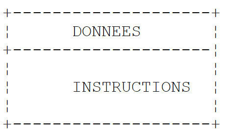
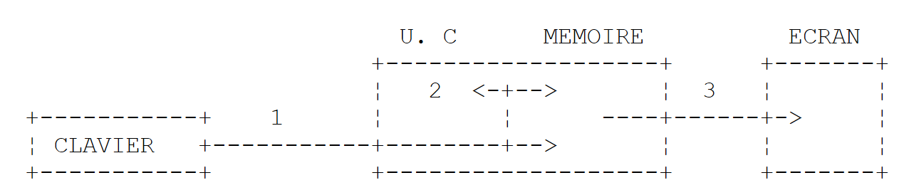
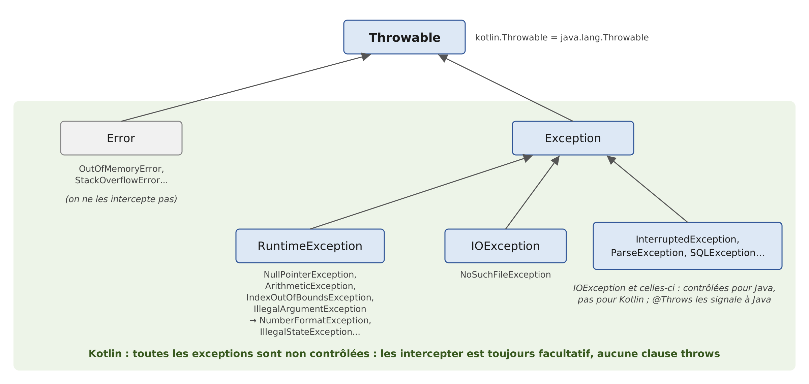

3. Les bases du langage Kotlin
3.1. Introduction
Nous traitons Kotlin d'abord comme un langage de programmation classique. Nous aborderons les classes dans le chapitre suivant. Dans un programme, on trouve deux choses :
- des données ;
- les instructions qui les manipulent.
On s'efforce généralement de séparer les données des instructions :

Tous les exemples de ce chapitre appartiennent au projet Gradle du dossier [03-bases] du code du cours. Comme indiqué au chapitre 2 « Installation de l'environnement de travail », chaque programme occupe un fichier rangé dans un paquetage qui porte son nom en minuscules : le programme [Bases04.kt] se trouve dans le dossier [src/main/kotlin/bases04] et commence par la ligne [package bases04]. On l'exécute avec le triangle vert d'IntelliJ IDEA, placé dans la marge en face de la fonction [main], ou en ligne de commande, depuis le dossier du projet, avec la commande [gradlew -q run -Pmain=bases04.Bases04Kt] ([./gradlew] sous Linux et macOS). L'option [-q] (« quiet ») supprime les messages de Gradle : seuls restent les affichages du programme. Nous expliquerons dans la section suivante le nom [bases04.Bases04Kt]. Les exemples s'exécutent avec la langue et les conventions françaises (la « locale » fr-FR), comme sur un poste Windows français. Nous verrons que cela n'a d'effet que sur les nombres et les dates mis en forme par un format : la simple conversion d'un réel en chaîne de caractères utilise toujours le point décimal.
3.2. Le programme minimal
3.2.1. La fonction main de haut niveau
Le programme [Bases01.kt] est le suivant :
Résultats :
Commentaires :
- ligne 2 : le paquetage du programme. Un paquetage (« package ») regroupe des déclarations apparentées, comme un dossier regroupe des fichiers. Le nom complet de tout ce qui est déclaré dans ce fichier commence par [bases01.]. En Kotlin, contrairement à Java, le dossier du fichier n'est pas imposé par le nom du paquetage ; mais l'usage, que nous suivons, est de les faire correspondre ;
- ligne 4 : la fonction [main] est le point d'entrée du programme. Le mot clé [fun] introduit une fonction ; [main()] n'a pas de paramètre et ne rend pas de résultat. La fonction est écrite directement dans le fichier, en dehors de toute classe : c'est une fonction de haut niveau (« top-level function »). Le corps de la fonction est placé entre accolades ;
- ligne 5 : la fonction [println] écrit une ligne à l'écran. C'est elle aussi une fonction de haut niveau, déclarée dans le paquetage [kotlin.io] de la bibliothèque standard de Kotlin ;
- ligne 7 : la forme Java de la même opération. [System] est une classe du JDK, [out] l'un de ses champs, qui représente la sortie standard (l'écran), et [println] une méthode de cet objet. Kotlin utilise directement toutes les classes de Java : c'est l'un de ses grands atouts. La fonction [println] de Kotlin n'est d'ailleurs qu'un raccourci pour [System.out.println] ; c'est elle que nous utiliserons ;
- ligne 9 : [mots] est une liste de chaînes de caractères ; les listes seront étudiées au chapitre 5. Le mot clé [val] déclare une variable qui ne changera pas de valeur ; on n'a pas écrit son type : le compilateur le déduit de la valeur, ici [List<String>]. La fonction [listOf] appartient au paquetage [kotlin.collections], utilisable sans directive d'importation (voir plus loin) ;
- ligne 10 : une liste s'affiche avec ses éléments entre crochets ;
- les instructions ne se terminent pas par un point-virgule : la fin de ligne suffit. Le point-virgule n'est utile que pour écrire plusieurs instructions sur une même ligne. Les lignes qui commencent par // sont des commentaires, ignorés par le compilateur.
Avec deux arguments sur la ligne de commande, que l'on transmet à Gradle par l'option [--args] :
Les arguments sont ignorés, car la fonction [main()] n'a pas de paramètre pour les recevoir. Pour en disposer, on la déclare [fun main(args: Array<String>)] : le tableau de chaînes [args] contient alors les arguments de la ligne de commande. Nous y reviendrons dans la section « Arguments du programme principal ».
3.2.2. La fonction main avec ses arguments
Le programme [Bases02.kt] est le suivant :
Résultats :
Commentaires :
- ligne 4 : la fonction [main] reçoit les arguments de la ligne de commande dans le paramètre [args]. En Kotlin, le type d'un paramètre s'écrit après son nom, séparé par deux-points : [args: Array<String>] se lit « [args], de type tableau de chaînes ». C'est l'équivalent du [String[] args] de Java ;
- ligne 6 : le nombre d'éléments du tableau est [args.size] (le [args.length] de Java). Dans la chaîne, [${args.size\}] est remplacé par la valeur de l'expression placée entre les accolades : c'est un gabarit de chaîne (« string template »), que nous détaillerons plus loin ;
- ligne 7 : la fonction [contentToString] construit une chaîne avec les éléments d'un tableau. Elle remplace la méthode [Arrays.toString] de Java, et n'a pas besoin, elle non plus, d'importation.
Nous n'avons écrit aucune classe. Pourtant, la machine virtuelle Java (la JVM), qui exécute le programme, ne connaît que des classes. Le compilateur Kotlin range donc les déclarations de haut niveau d'un fichier dans une classe qu'il génère lui-même, et qui porte le nom du fichier suivi de [Kt] : pour le fichier [Bases02.kt] du paquetage [bases02], c'est la classe [bases02.Bases02Kt]. Voilà pourquoi la commande d'exécution désigne le programme par [-Pmain=bases02.Bases02Kt]. On peut le constater en compilant le fichier avec le compilateur en ligne de commande [kotlinc] (chapitre 2), puis en examinant la classe produite avec l'outil [javap] du JDK :
- [kotlinc] a produit un seul fichier de code intermédiaire (« bytecode »), [Bases02Kt.class], dans le dossier du paquetage ;
- la commande [kotlinr] (le lanceur de Kotlin, chapitre 2) exécute cette classe en ajoutant au chemin des classes la bibliothèque standard de Kotlin ([kotlin-stdlib.jar]) ;
- [javap] montre que la classe générée est [public final] et que la fonction [main] y est devenue une méthode [public static] : exactement la méthode [public static void main(String[] args)] qu'attend la JVM. Pour la JVM, un programme Kotlin est une classe Java comme une autre ;
- lancée par la simple commande [java], la classe échoue : le code généré fait appel à des classes de la bibliothèque standard de Kotlin (ici [kotlin.jvm.internal.Intrinsics], qui vérifie notamment que les paramètres ne valent pas [null]), absente du chemin des classes. Gradle et IntelliJ IDEA l'ajoutent automatiquement ; un programme Kotlin livré seul doit l'emporter avec lui (option [-include-runtime] de [kotlinc], chapitre 2, ou scripts de Gradle, voir plus loin).
Pour le programme [Bases01.kt], dont la fonction [main] n'a pas de paramètre, le compilateur génère en plus une méthode [main(String[])] qui se contente d'appeler la première. Gradle range les classes qu'il compile dans le dossier [build/classes/kotlin/main] du projet ; on peut les y examiner après une compilation ([gradlew build]) :
La comparaison avec Java 25 est instructive. Java 25 permet lui aussi d'écrire un programme sans déclarer de classe (un « fichier source compact », avec une méthode [void main()]) : le compilateur Java enveloppe alors le contenu du fichier dans une classe implicite portant le nom du fichier. Kotlin fait la même chose depuis sa première version, avec deux différences :
- la classe générée s'appelle [Bases02Kt] et non [Bases02], ce qui laisse le nom [Bases02] libre pour une classe que le programmeur voudrait écrire lui-même dans le même fichier. L'annotation [@file:JvmName("NomDeClasse")], placée en tête du fichier, permet de choisir un autre nom ;
- les fonctions de haut niveau sont compilées en méthodes [static] : aucun objet n'est créé pour appeler [main], alors que la méthode [void main()] d'un fichier compact Java est une méthode d'instance. Surtout, en Kotlin, cette écriture n'est pas réservée aux petits programmes : fonctions, variables et constantes de haut niveau sont d'usage courant dans tous les programmes, à côté des classes.
La fonction [main] ne peut avoir que les deux formes rencontrées : [fun main()] et [fun main(args: Array<String>)]. Elle n'a pas besoin d'être déclarée publique : en Kotlin, tout ce qui est déclaré est public par défaut.
3.2.3. Les importations par défaut
Le programme [Bases01.kt] utilise les fonctions [println] et [listOf], et le programme [Bases02.kt] la fonction [contentToString], sans aucune directive [import]. C'est possible parce que tout fichier Kotlin importe d'office les paquetages suivants de la bibliothèque standard :
On dispose ainsi sans rien écrire des types de base ([Int], [String]... du paquetage [kotlin]), des listes, ensembles et dictionnaires ([kotlin.collections]), des entrées-sorties sur la console ([kotlin.io]), des intervalles ([kotlin.ranges]), des fonctions sur les chaînes ([kotlin.text]), ainsi que des classes du paquetage [java.lang] de Java ([System], [Math], [Thread]...). Toute autre déclaration doit être importée, en tête du fichier, juste après la ligne [package] : une directive par classe ou fonction ([import java.math.BigDecimal]) ou une directive par paquetage ([import java.time.*]). Il n'y a pas d'équivalent à la directive [import module java.base;] de Java 25, qu'un fichier compact Java reçoit d'office : un programme Kotlin qui utilise les classes [BigDecimal] ou [LocalDate] du JDK doit les importer. Un point de syntaxe : les directives [import], comme les autres instructions, ne se terminent pas par un point-virgule.
3.3. Les données de Kotlin
Kotlin utilise les types de données suivants :
- les nombres entiers, signés et non signés ;
- les nombres réels ;
- les nombres décimaux ;
- les caractères et chaînes de caractères ;
- les booléens ;
- les objets.
3.3.1. Les types de données prédéfinis
Type Kotlin | Type Java correspondant | Donnée représentée | Suffixe des littéraux | Codage | Domaine de valeurs |
[Char] | [char] / [Character] | caractère | 2 octets | caractère Unicode (UTF-16), de '\u0000' à '\uFFFF' | |
[Byte] | [byte] / [Byte] | nombre entier | 1 octet | [-2⁷, 2⁷-1] soit [-128, 127] | |
[Short] | [short] / [Short] | nombre entier | 2 octets | [-2¹⁵, 2¹⁵-1] soit [-32768, 32767] | |
[Int] | [int] / [Integer] | nombre entier | 4 octets | [-2³¹, 2³¹-1] soit [-2147483648, 2147483647] | |
[Long] | [long] / [Long] | nombre entier | L | 8 octets | [-2⁶³, 2⁶³-1] soit [-9223372036854775808, 9223372036854775807] |
[UByte], [UShort], [UInt], [ULong] | (pas d'équivalent) | entier non signé | U, UL | 1, 2, 4, 8 octets | [0, 2⁸-1], [0, 2¹⁶-1], [0, 2³²-1], [0, 2⁶⁴-1] |
[Float] | [float] / [Float] | nombre réel | F | 4 octets | [1,4 10⁻⁴⁵, 3,4 10³⁸] en valeur absolue, 7 chiffres significatifs |
[Double] | [double] / [Double] | nombre réel | 8 octets | [4,9 10⁻³²⁴, 1,8 10³⁰⁸] en valeur absolue, 15 à 16 chiffres significatifs | |
[Boolean] | [boolean] / [Boolean] | booléen | non fixé | [true], [false] | |
[String] | [String] | chaîne de caractères | référence sur une séquence de caractères Unicode | ||
[BigDecimal] (classe Java) | [BigDecimal] | nombre décimal | variable | nombre décimal exact, de précision quelconque | |
[Any] | [Object] | référence d'objet | référence sur un objet de n'importe quel type |
Java distingue les huit types primitifs ([int], [double]...), dont les valeurs ne sont pas des objets, et les types référence (les classes), et il associe à chaque type primitif une classe enveloppe ([Integer] pour [int]...). Kotlin supprime cette distinction : pour le langage, toute valeur est un objet. Le type [Int] est une classe, qui a des méthodes ; on peut écrire [3.plus(4)] ou [3.toString()], ce que Java refuse pour le littéral 3 de type [int]. Les noms des types commencent tous par une majuscule, comme ceux des classes.
Cela ne coûte rien à l'exécution. Le compilateur traduit une variable de type [Int] par une variable du type primitif [int] de la JVM chaque fois que c'est possible, et n'utilise la classe enveloppe [java.lang.Integer] que lorsqu'un objet est nécessaire : quand la valeur est passée à un paramètre de type [Any] (l'équivalent Kotlin de la classe [Object] de Java), rangée dans une liste, ou quand elle peut valoir [null] (voir plus loin). L'emballage (« boxing ») et le déballage (« unboxing ») sont donc toujours là, mais c'est l'affaire du compilateur, et le programmeur Kotlin n'a pas à s'en soucier. Il n'y a pas de type [Integer] en Kotlin : il n'y a que [Int].
Les tailles en octets sont données par les constantes [Int.SIZE_BYTES], [Long.SIZE_BYTES]... (et [Int.SIZE_BITS]... en bits), les bornes des domaines par [Int.MIN_VALUE] et [Int.MAX_VALUE], etc.
Contrairement à Java, Kotlin possède des entiers non signés : [UByte], [UShort], [UInt] et [ULong], qui ont la même taille que leurs homologues signés mais ne représentent que des nombres positifs ou nuls. Leurs littéraux portent le suffixe U ([42U]) ou UL ([42UL]). Ils servent surtout à manipuler des données binaires (octets d'un fichier, adresses, couleurs) ; les calculs courants se font avec les types signés. Kotlin n'a pas non plus de type décimal : les montants se calculent avec la classe [BigDecimal] du paquetage [java.math] de Java, que nous présentons un peu plus loin.
Le programme [Bases03.kt] illustre ces différents points :
Résultats :
Commentaires :
- ligne 4 : la classe [BigDecimal] appartient au JDK ; elle doit être importée ;
- ligne 7 : déclaration d'une variable [ent] de type [Int] initialisée à 2. En Kotlin, le type d'une variable s'écrit après son nom, séparé par deux-points. Nous verrons que le type peut le plus souvent être omis ;
- ligne 8 : le suffixe F est obligatoire : le littéral 10.5 est de type [Double], et le compilateur refuse de l'affecter à une variable de type [Float] ;
- ligne 11 : le littéral 1000 est accepté pour une variable de type [Long], parce que le compilateur sait qu'il s'agit d'une constante qui tient dans le type. Il en est de même aux lignes 12-13 pour les types [Byte] et [Short]. En revanche, nous le verrons, Kotlin ne convertit jamais implicitement une variable d'un type numérique dans un autre ;
- ligne 16 : un nombre [BigDecimal] est un objet ; on le crée ici à partir d'une chaîne de caractères, ce qui garantit une valeur exacte. Kotlin n'a pas d'opérateur [new] : on crée un objet en appelant le constructeur de sa classe comme une fonction ;
- ligne 18 : dans une chaîne de caractères, [$ent] est remplacé par la valeur de la variable [ent], et [${nomType(ent)\}] par la valeur de l'expression écrite entre les accolades. Ces gabarits de chaînes sont la façon habituelle de construire une chaîne en Kotlin ; nous y revenons dans la section suivante. [Int.SIZE_BYTES] est la taille en octets d'un [Int] ;
- ligne 18 : la fonction [nomType] (lignes 42-43) attend un paramètre de type [Any]. Le paramètre est donc un objet, et la valeur [ent] est emballée dans un objet [java.lang.Integer]. La fonction affiche deux noms : [o::class.qualifiedName] est le nom complet du type pour Kotlin ([kotlin.Int]), [o.javaClass.name] celui de la classe de l'objet pour la JVM ([java.lang.Integer]). On voit que [kotlin.Int], [kotlin.Double], [kotlin.String]... sont représentés à l'exécution par les classes de Java ;
- ligne 21 : la taille d'une chaîne en mémoire n'est pas accessible : [String] n'a pas de constante [SIZE_BYTES] ;
- ligne 26 : la taille d'un booléen n'est pas fixée par la JVM : [Boolean] n'a pas de constante [SIZE_BYTES] ;
- ligne 27 : [BigDecimal] est une classe Java : ses deux noms sont identiques ;
- ligne 29 : le littéral 3 est un objet de type [Int] : [3::class.simpleName] est le nom court de son type, et l'on peut appeler ses méthodes [plus] et [toString]. Nous verrons au chapitre 4 que l'opérateur + n'est qu'une autre écriture de la méthode [plus] ;
- lignes 31-33 : les constantes [MIN_VALUE] et [MAX_VALUE] donnent les bornes du domaine de valeurs. Attention : pour les réels, [Double.MIN_VALUE] est la plus petite valeur strictement positive (4,9 10⁻³²⁴) et non le plus grand nombre négatif, qui est [-Double.MAX_VALUE] ;
- ligne 35 : un entier non signé de 32 bits. La valeur 4 000 000 000 dépasse le domaine des [Int], mais pas celui des [UInt], qui va jusqu'à 2³²-1 ;
- lignes 37-38 : -1 est codé par 32 bits à 1 ; la fonction [toUInt] les interprète comme un entier non signé, qui vaut 2³²-1 ;
- lignes 42-43 : une fonction de haut niveau du fichier. Le type du résultat s'écrit après la liste des paramètres : [: String]. Elle rend ([return]) une chaîne de caractères. Les fonctions sont présentées dans la section « Passage de paramètres à une fonction ».
On remarquera que les réels sont affichés avec un point décimal (10.5, -4.6), bien que le programme s'exécute en français. La conversion d'un nombre en chaîne, par un gabarit, par la concaténation ou par la méthode [toString], ne dépend pas de la langue de l'utilisateur : elle produit toujours le point décimal. Seuls les formats numériques comme %f, que nous allons voir, suivent les conventions de la langue.
3.3.2. Notation des données littérales
Donnée | Exemples de littéraux |
entier [Int] (32 bits) | 145, -7, 0xFF (hexadécimal), 0b1010_1010 (binaire) |
entier [Long] (64 bits), suffixe L | 100000L, 1_000_000_000_000L, 3_000_000_000 (trop grand pour un [Int]) |
entier non signé [UInt], [ULong], suffixe U, UL | 255U, 0xFFFF_FFFFU, 1UL |
réel [Double] | 134.789, -45E-18 (-45 10⁻¹⁸), 10.0 |
réel [Float], suffixe F ou f | 134.789F, -45E-18F |
nombre décimal [BigDecimal] | pas de littéral : [BigDecimal("100000.50")] |
caractère [Char] | 'A', 'b', '\n', '\u00e9' |
chaîne [String] | "aujourd'hui", "c:\\chap1", "$nom a ${age + 10\} ans", chaîne brute """c:\chap1""" |
booléen [Boolean] | [true], [false] |
date | [LocalDate.of(1954, 10, 13)] (année, mois, jour) pour le 13/10/1954 |
Dans le code source, les réels s'écrivent toujours avec un point décimal. Comme en Java, on peut écrire les entiers en hexadécimal (préfixe [0x]) ou en binaire (préfixe [0b]), et séparer les groupes de chiffres par le caractère _ pour améliorer la lisibilité : [1_000_000] est l'entier un million. Kotlin diffère de Java sur quelques points, qui suppriment autant de pièges :
- un littéral entier sans suffixe est de type [Int] s'il tient dans ce type, et de type [Long] sinon : [3_000_000_000] est un [Long]. Java refuse ce littéral sans le suffixe L ;
- le suffixe L s'écrit obligatoirement en majuscule : le compilateur refuse [100l] avec le message [use 'L' instead of 'l'], parce que l ressemble trop au chiffre 1 ;
- il n'y a pas de notation octale. Le piège de Java, où 017 vaut 15, n'existe pas : le compilateur refuse 017 avec le message [leading zeros are not allowed in integer literals] ;
- il n'y a pas de suffixe D pour les réels : un littéral qui contient un point décimal ou un exposant est un [Double] ; 10.0 s'écrit donc 10.0 et non 10D ;
- les entiers non signés ont leurs propres suffixes, U et UL.
Une chaîne littérale peut contenir des séquences d'échappement introduites par le caractère \ : "\n" représente la marque de fin de ligne et non la succession des deux caractères \ et n, "\t" une tabulation, "\"" un guillemet, "\\" le caractère \ lui-même, "\$" le caractère $ (voir ci-dessous), "\u00e9" le caractère Unicode de code hexadécimal 00E9. Pour écrire le chemin Windows c:\chap1\paragraph3, il faut donc écrire "c:\\chap1\\paragraph3". Les classes de fichiers de Java acceptent aussi le séparateur / sous Windows : "c:/chap1/paragraph3" désigne le même fichier.
Pour construire une chaîne à partir de plusieurs valeurs, Kotlin offre trois moyens :
- les gabarits de chaînes (« string templates ») : dans une chaîne, [$nom] est remplacé par la valeur de la variable [nom], et [${expression\}] par la valeur d'une expression quelconque : ["dans 10 ans il aura ${age + 10\} ans"]. C'est le moyen le plus lisible, et le plus utilisé. C'est l'équivalent des chaînes interpolées [$"..."] du C# ; Java, lui, n'en a pas (les « string templates » proposés en préversion dans Java 21 et 22 ont été retirés) ;
- la concaténation avec l'opérateur + : si l'opérande de gauche est une chaîne, l'opérande de droite est converti en chaîne, quel que soit son type. Contrairement à Java, l'opérande de gauche doit être une chaîne : [10 + " ans"] est refusé par le compilateur, car le type [Int] n'a pas d'opérateur + qui accepte une chaîne ;
- les formats : ["format".format(valeur1, valeur2, ...)] ou [String.format(format, valeur1, valeur2, ...)]. Ce sont les formats de Java, avec les mêmes spécificateurs, remplacés dans l'ordre par les valeurs qui suivent : %s (une valeur quelconque convertie en chaîne), %d (un entier), %f (un réel), %.2f (un réel avec deux décimales), %x ou %X (un entier en hexadécimal), %,d (un entier avec séparateur des milliers), %e (notation scientifique), %n (une fin de ligne), %10s (une chaîne cadrée à droite sur 10 caractères), %-10s (cadrée à gauche)... Les formats numériques suivent les conventions de la langue de l'utilisateur. On les utilise lorsqu'il faut maîtriser la présentation des nombres (nombre de décimales, cadrage) ; sinon, le gabarit suffit.
Kotlin offre enfin les chaînes brutes (« raw strings ») : une chaîne délimitée par trois guillemets ["""..."""] peut s'étendre sur plusieurs lignes et contenir des guillemets ; surtout, les séquences d'échappement n'y sont pas interprétées : le caractère \ y est pris tel quel, et l'on écrit ["""c:\chap1"""]. C'est très pratique pour écrire du JSON, du SQL, du HTML ou des expressions régulières (chapitre 5). Les chaînes brutes acceptent les gabarits. Les espaces de début de ligne sont conservés tels quels ; pour indenter le texte avec le code, on applique à la chaîne la fonction [trimIndent()], qui retire les espaces communs à toutes les lignes ainsi que la première et la dernière ligne si elles sont vides, ou la fonction [trimMargin()], qui retire tout ce qui précède, sur chaque ligne, le caractère | (la « marge »). Les blocs de texte de Java 15 ont été conçus sur ce modèle ; ils retirent d'office l'indentation commune, mais interprètent les séquences d'échappement.
Le programme [Bases04.kt] montre ces différentes notations :
Résultats :
Commentaires :
- lignes 4-6 : les classes du JDK utilisées par le programme sont importées ;
- ligne 10 : quatre déclarations sur une même ligne, séparées par des points-virgules. [0xFF] vaut 255 et [0b1010_1010] vaut 170. Le type des variables n'est pas écrit : le compilateur le déduit de la valeur, ici [Int] ;
- ligne 11 : le suffixe L fait de 100000 un [Long]. Le littéral 3_000_000_000, trop grand pour un [Int], est un [Long] sans qu'il soit besoin de suffixe ;
- ligne 14 : deux entiers non signés de type [UInt]. 0xFFFF_FFFFU, qui a ses 32 bits à 1, vaut 2³²-1 ;
- ligne 17 : -45E-18 est affiché -4.5E-17 : c'est la même valeur, normalisée. Le réel 10.0 est affiché 10.0 : la conversion d'un [Double] en chaîne produit toujours au moins une décimale ;
- ligne 19 : un [BigDecimal] conserve le nombre de décimales avec lequel il a été écrit : 100000.50 et non 100000.5 ;
- ligne 22 : la séquence \u00e9 désigne le caractère Unicode de code hexadécimal 00E9, c'est-à-dire é ;
- ligne 26 : une date. La classe [LocalDate] (paquetage [java.time] du JDK) représente une date sans heure. Kotlin n'a pas sa propre classe de dates : il utilise celles de Java. Sa conversion en chaîne utilise le format international ISO 8601 (année-mois-jour), quelle que soit la langue. Nous retrouverons les dates au chapitre 5 ;
- ligne 30 : chaque \\ représente un seul caractère \ ;
- ligne 32 : une fin de ligne et une tabulation ;
- ligne 34 : les séquences \$ et \" ;
- ligne 39 : un gabarit. [$nom] et [$age] sont remplacés par les valeurs des variables, [${age + 10\}] par la valeur de l'expression. Les accolades sont nécessaires dès que ce qui suit le $ n'est pas un simple nom de variable ;
- ligne 40 : le même texte construit par concaténation. Les parenthèses de [(age + 10)] sont indispensables : sans elles, les opérateurs + seraient évalués de gauche à droite, la chaîne recevrait d'abord 23 puis 10, et l'on obtiendrait « il aura 2310 ans ». Le gabarit n'a pas ce piège ;
- ligne 41 : le même texte construit par un format ;
- ligne 43 : quelques spécificateurs : %.1f (une décimale), %X (hexadécimal en majuscules), %,d (séparateur des milliers). Ces formats suivent les conventions françaises : virgule décimale et, comme séparateur des milliers, une espace insécable fine. La fonction [format] de la bibliothèque Kotlin s'applique à la chaîne de format elle-même ; elle appelle [String.format] de Java ;
- ligne 44 : la fonction [toString(base)] convertit un entier en chaîne dans une base quelconque, ici 2 ; la fonction [uppercase()] rend la chaîne en majuscules. On voit qu'un gabarit peut contenir des appels de fonctions ;
- ligne 45 : un format de date personnalisé : jour de la semaine (EEEE), jour (d), mois en lettres (MMMM), année (yyyy). Les noms des jours et des mois sont en français, la langue de l'utilisateur. On remarquera que le gabarit peut contenir des guillemets à l'intérieur des accolades ;
- lignes 48-53 : une chaîne brute sur plusieurs lignes. Les guillemets y sont écrits tels quels, et \chap1 n'a pas eu besoin d'être écrit \\chap1. La fonction [trimIndent()] a retiré les huit espaces communs à toutes les lignes, ainsi que la première ligne (vide, juste après les guillemets ouvrants) et la dernière (qui ne contient que des espaces avant les guillemets fermants) ;
- ligne 56 : une chaîne brute sur une seule ligne, qui évite d'échapper les guillemets du JSON, avec deux gabarits ;
- lignes 59-62 : la fonction [trimMargin()] retire, sur chaque ligne, les espaces et le caractère | qui marquent la marge : les trois espaces placés après le | sont conservés. Puisque les séquences d'échappement ne sont pas interprétées dans une chaîne brute, le caractère $ y est écrit [${'$'\}] : un gabarit dont l'expression est le caractère '$'. Ici, comme le $ est suivi d'une fin de ligne, il aurait pu être écrit seul ; mais [$nom] serait remplacé par la valeur de [nom]. Depuis Kotlin 2.2, on peut aussi préfixer la chaîne par plusieurs $ : dans [$$"""{ "$schema": "$$nom" \}"""], il faut deux $ pour introduire un gabarit, et [$schema] reste tel quel.
3.3.3. Déclaration des données
3.3.3.1. Rôle des déclarations
Un programme manipule des données caractérisées par un nom et un type. Ces données sont stockées en mémoire. Au moment de la traduction du programme, le compilateur affecte à chaque donnée un emplacement en mémoire caractérisé par une adresse et une taille. Il le fait en s'aidant des déclarations faites par le programmeur. Par ailleurs, celles-ci permettent au compilateur de détecter des erreurs de programmation. Ainsi l'opération [x = x * 2] sera déclarée erronée si [x] est une chaîne de caractères.
3.3.3.2. Variables en lecture seule et variables modifiables
Kotlin a deux mots clés pour déclarer une variable :
- [val] (« value ») déclare une variable en lecture seule : elle reçoit une valeur une seule fois, et ne peut plus en changer ensuite. C'est l'équivalent d'une variable [final] de Java ;
- [var] (« variable ») déclare une variable modifiable, qui peut recevoir de nouvelles valeurs.
La syntaxe est la suivante :
Le type est le plus souvent omis : le compilateur le déduit alors de la valeur (inférence de type). Le mot [var] de Kotlin n'a donc pas le même sens que celui de Java 10 : en Java, [var] signifie « type déduit » ; en Kotlin, il signifie « modifiable », et le type peut être déduit avec [val] comme avec [var]. Une variable déclarée sans être initialisée doit avoir un type explicite ; elle ne peut pas être utilisée avant d'avoir reçu une valeur (message [variable 'b' must be initialized]).
L'usage en Kotlin est de déclarer toutes les variables avec [val], et de n'utiliser [var] que lorsque la variable doit réellement changer de valeur. Le programme y gagne en lisibilité : à la lecture de [val total = ...], on sait que [total] gardera cette valeur. IntelliJ IDEA signale d'ailleurs toute variable [var] qui pourrait être une [val].
Kotlin fait la différence entre majuscules et minuscules : les variables [FIN] et [fin] sont différentes. Par convention, le nom d'une variable commence par une minuscule, chaque mot suivant par une majuscule : [prixHt], [nbEnfants].
3.3.3.3. Déclaration des constantes
Une variable [val] ne change pas de valeur, mais sa valeur peut n'être connue qu'à l'exécution ([val aujourdhui = LocalDateTime.now()]). Une constante, au sens strict, est une valeur connue dès la compilation. Kotlin la déclare avec les mots clés [const val] :
Une constante [const val] est déclarée au niveau le plus haut du fichier (en dehors des fonctions), ou dans un [object] ou un [companion object] que nous verrons au chapitre 4. Elle ne peut être que d'un type de base ([Int], [Double], [Boolean]...) ou de type [String], et sa valeur doit être calculable par le compilateur. Par exemple :
Le compilateur remplace alors chaque utilisation de [TAUX_TVA] par sa valeur, comme le fait le compilateur Java pour un champ [static final] initialisé par une constante. Les tentatives suivantes sont refusées :
(le point d'exclamation de [LocalDate!] sera expliqué dans la section suivante). Pourquoi déclarer des constantes ?
- la lecture du programme est plus aisée si l'on a donné à la constante un nom significatif ;
- la modification du programme est plus aisée si la « constante » vient à changer. Ainsi, si le taux de TVA passe à 0,25, la seule modification à faire sera celle de l'instruction qui définit sa valeur : [const val TAUX_TVA = 0.25]. Si l'on avait utilisé 0.2 explicitement dans le programme, ce serait de nombreuses instructions qu'il faudrait modifier.
Par convention, comme en Java, le nom d'une constante s'écrit en majuscules, les mots étant séparés par le caractère _ : [TAUX_TVA], [MAX_VALUE]. Une variable locale [val] garde un nom ordinaire.
Le programme [Bases05.kt] est le suivant :
Résultats :
Commentaires :
- ligne 7 : une constante de haut niveau. Le compilateur la range dans la classe [Bases05Kt] comme un champ [public static final double] ;
- ligne 11 : une variable locale en lecture seule, de type [String] déduit ;
- ligne 13 : une variable modifiable. Le littéral 100.0 donne à [prixHt] le type [Double]. Avec [var prixHt = 100], la variable serait de type [Int], et l'affectation de 250.0 de la ligne 15 serait refusée ;
- ligne 14 : le résultat est un [Double], affiché avec au moins une décimale : 120.0 ;
- ligne 15 : [prixHt] reçoit une nouvelle valeur ;
- ligne 19 : une donnée typée explicitement ;
- ligne 20 : la fonction [nomType] (ligne 41) affiche le nom court ([simpleName]) et le nom complet ([qualifiedName]) du type de son paramètre ;
- ligne 22 : une donnée typée implicitement. Parce que 3 est de type [Int], [j] sera de type [Int] ;
- ligne 24 : parce que [LocalDateTime.now()] (la date et l'heure courantes) est de type [LocalDateTime], [aujourdhui] sera de type [LocalDateTime]. On remarquera que le programme appelle une méthode [static] d'une classe Java comme en Java : [LocalDateTime.now()] ;
- lignes 26-29 : le type déduit dépend de l'écriture du littéral : 3.5 est un [Double], 3.5F un [Float], 10L un [Long] ;
- ligne 33 : une variable déclarée sans valeur initiale : son type est obligatoire. Bien qu'elle soit déclarée avec [val], elle peut recevoir sa valeur plus tard (ligne 36), une seule fois. Kotlin ne permet pas de déclarer plusieurs variables dans une même instruction, comme le [int a = 1, b, c = 3;] de Java : on écrit une déclaration par ligne, ou plusieurs déclarations séparées par des points-virgules, comme dans le programme précédent ;
- ligne 41 : une fonction dont le corps est réduit à une expression peut s'écrire avec le signe = au lieu des accolades et du [return] (corps d'expression). On pourrait même omettre le type du résultat, que le compilateur déduirait de l'expression.
Une variable [val] ne peut pas recevoir une nouvelle valeur, et une variable [var] ne peut pas changer de type : son type a été fixé par sa déclaration. Ainsi, les instructions suivantes sont refusées par le compilateur :
3.3.4. La sûreté vis-à-vis de null
Il est parfois utile de pouvoir exprimer l'absence de valeur : un âge inconnu, un champ non renseigné dans une base de données, une recherche infructueuse. En Java, toute variable d'un type référence peut valoir [null], c'est-à-dire « pas d'objet ». Utiliser un membre d'une telle variable, par exemple sa méthode [length()], provoque une erreur à l'exécution, une [NullPointerException] : c'est l'erreur la plus fréquente en Java, car le compilateur Java ne fait pas la différence entre une référence qui peut valoir [null] et une référence qui ne le peut pas. Pour exprimer l'absence de valeur sans [null], Java 8 a ajouté la classe [Optional<T>], une « boîte » qui contient une valeur ou qui est vide ; et pour un nombre, Java utilise la classe enveloppe [Integer], qui peut valoir [null], à la place du type primitif [int].
Kotlin règle la question dans le système de types lui-même, et c'est l'un de ses apports majeurs. Un type ordinaire n'admet pas la valeur null : une variable de type [String] contient toujours une chaîne, une variable de type [Int] toujours un entier. Pour admettre [null], il faut le dire, en faisant suivre le nom du type d'un point d'interrogation : [String?] est le type « chaîne ou null », [Int?] le type « entier ou null ». Ces types sont dits nullables (« nullable types »). Le compilateur vérifie alors que l'on ne peut pas utiliser un membre d'une valeur nullable sans avoir traité le cas [null] :
Pour utiliser une valeur nullable, Kotlin offre plusieurs moyens :
- le test [if (x != null)] : dans la branche où le test est vrai, le compilateur sait que [x] ne vaut pas [null], et le traite comme une valeur de type [String] (et non [String?]). C'est le transtypage intelligent (« smart cast ») ;
- l'appel sûr [x?.length] : si [x] vaut [null], l'expression vaut [null] au lieu de provoquer une erreur ; sinon, elle vaut [x.length]. Le résultat est donc de type [Int?] ;
- l'opérateur Elvis [x ?: valeurParDefaut] : il vaut [x] si [x] ne vaut pas [null], et [valeurParDefaut] sinon (son nom vient de la ressemblance du signe ?: avec la coiffure du chanteur, vue de côté). On le combine souvent avec l'appel sûr : [x?.length ?: 0] ;
- la fonction let : [x?.let { ... \}] n'exécute le bloc entre accolades que si [x] ne vaut pas [null] ; dans le bloc, la valeur s'appelle [it] et elle est de type non nullable. Le bloc est une lambda, notion que nous étudierons au chapitre 7 ;
- l'assertion [x!!] : le programmeur affirme que [x] ne vaut pas [null]. Si c'est vrai, [x!!] est de type [String] ; sinon, une [NullPointerException] est lancée. On l'utilise le moins possible : c'est un retour volontaire au comportement de Java.
Les opérateurs ?. ?: et !! sont présentés plus en détail dans la section « Les opérateurs de null ». Le C# a adopté une démarche voisine avec ses « types référence nullables » (C# 8), sous la forme d'avertissements ; en Kotlin, ce sont des erreurs de compilation.
En pratique, la [NullPointerException] devient rare en Kotlin. Elle ne peut plus survenir que dans quelques cas : l'emploi de !!, une exception lancée explicitement, et surtout l'utilisation de code Java. Le compilateur Kotlin ne sait pas, en effet, si une méthode Java peut rendre [null] : il lui donne alors un type plateforme (« platform type »), noté [String!] dans les messages du compilateur (on ne peut pas l'écrire dans le code), que l'on peut utiliser comme un [String] ou comme un [String?]. La responsabilité revient alors au programmeur. Lorsqu'une méthode Java est connue pour pouvoir rendre [null], on range son résultat dans une variable de type nullable ([val chemin: String? = System.getenv("X")]) : le compilateur reprend alors ses vérifications. (Les méthodes Java annotées [@Nullable] ou [@NonNull], par exemple avec les annotations du projet JSpecify, reçoivent un type Kotlin précis, et non un type plateforme.)
Que deviennent les classes enveloppes et [Optional] ? Un [Int] est compilé en [int], un [Int?] en [java.lang.Integer], puisque seule une référence peut valoir [null] : les classes enveloppes sont là, mais le compilateur les gère seul. La classe [Optional] reste utilisable, puisque c'est une classe Java, mais elle n'a guère d'intérêt en Kotlin : un [String?] dit la même chose qu'un [Optional<String>], sans créer d'objet supplémentaire, et les opérateurs ?. et ?: remplacent ses méthodes [map] et [orElse]. Les fonctions de la bibliothèque Kotlin qui peuvent ne rien rendre rendent [null] : [toIntOrNull()], [firstOrNull()], [readlnOrNull()]...
Nous rencontrerons les types nullables dès les premiers exemples, car la fonction [readlnOrNull()], qui lit une ligne tapée au clavier, rend [null] lorsqu'il n'y a plus rien à lire (fin du flux d'entrée). Le programme [Bases06.kt] est le suivant :
Résultats avec une saisie au clavier :
Résultats lorsque l'utilisateur tape Ctrl-D (Ctrl-Z puis Entrée sous Windows), qui ferme le flux d'entrée :
Commentaires :
- ligne 5 : une fonction qui rend un prénom ou [null]. Le type de son résultat, [String?], l'annonce à ses utilisateurs. L'expression [if (...) "jean" else null] est un [if] qui rend une valeur ; nous y reviendrons ;
- lignes 9-10 : deux variables de type [String?]. [prenom2] vaut [null]. Le type aurait pu être omis : il aurait été déduit du type du résultat de [prenomDe] ;
- ligne 11 : un gabarit affiche [null] pour une valeur nulle ; on teste la valeur [null] avec l'opérateur == ;
- lignes 13-14 : dans le bloc du [if], [prenom1] est de type [String] : on peut utiliser sa propriété [length] (la longueur de la chaîne) sans risque. En dehors du bloc, [prenom1.length] serait refusé ;
- ligne 17 : l'appel sûr. [prenom2?.length] vaut [null] ;
- ligne 19 : l'opérateur Elvis. [prenom2 ?: "inconnu"] vaut "inconnu", et [prenom2?.length ?: 0] vaut 0 ;
- lignes 21-22 : la fonction [let]. Le premier bloc est exécuté avec [it] valant "jean" ; le second ne l'est pas ;
- lignes 25-26 : la fonction [toIntOrNull()] convertit une chaîne en entier, et rend [null] si la chaîne ne représente pas un entier. Le type [Int?] est compilé en [java.lang.Integer] ;
- ligne 27 : on ne peut pas faire de calcul avec un [Int?] : [ageInconnu + 1] serait refusé. L'opérateur Elvis fournit un [Int] : 0 si [ageInconnu] vaut [null]. Le déballage d'un [Integer] null, piège classique de Java, est ainsi impossible ;
- ligne 30 : l'assertion !! appliquée à une valeur non nulle : elle rend la valeur, de type [String] ;
- lignes 31-34 : l'assertion !! appliquée à [null] lance une [NullPointerException]. La structure [try / catch], qui intercepte l'erreur, est présentée plus loin ; on affiche ici le nom complet de la classe de l'exception. [NullPointerException] est une classe de Java, que Kotlin désigne par le même nom ;
- ligne 38 : la méthode Java [System.getenv] rend la valeur d'une variable d'environnement du système, ou [null] si elle n'existe pas. Son résultat est de type plateforme [String!] : [chemin] est donc de ce type ;
- ligne 39 : utilisé comme un [String?], [chemin] se comporte bien ;
- ligne 42 : utilisé comme un [String], il est accepté par le compilateur, mais provoque une [NullPointerException] à l'exécution. Le message de l'exception (propriété [message]), produit par la JVM, indique précisément quelle expression valait [null]. Si l'on avait écrit [val chemin: String? = System.getenv(...)], le compilateur aurait refusé cette ligne ;
- ligne 48 : la fonction [print] écrit à l'écran sans passer à la ligne : la saisie se fera à la suite du message ;
- ligne 49 : la fonction [readlnOrNull()] lit la ligne tapée au clavier. Elle rend une valeur de type [String?] : [null] si le flux d'entrée est fermé ;
- ligne 50 : on teste la valeur [null] ;
- ligne 54 : dans la branche [else], [ligne] est de type [String] : on peut utiliser [ligne.length] sans risque.
3.3.5. Les conversions entre nombres et chaînes de caractères
Conversion | Fonction |
nombre -> chaîne | [nombre.toString()], un gabarit ["$nombre"], ["" + nombre] ou un format ["%d".format(nombre)] |
chaîne -> Int | [chaine.toInt()], [chaine.toIntOrNull()] |
chaîne -> Long | [chaine.toLong()], [chaine.toLongOrNull()] |
chaîne -> Double | [chaine.toDouble()], [chaine.toDoubleOrNull()] |
chaîne -> Float | [chaine.toFloat()], [chaine.toFloatOrNull()] |
chaîne -> BigDecimal | [chaine.toBigDecimal()], [chaine.toBigDecimalOrNull()] |
chaîne -> Boolean | [chaine.toBoolean()], [chaine.toBooleanStrictOrNull()] |
Ces fonctions de conversion sont des fonctions de la bibliothèque Kotlin (paquetage [kotlin.text]) que l'on appelle sur la chaîne elle-même : ["10".toInt()] plutôt que l'[Integer.parseInt("10")] de Java, qui reste utilisable. Ce sont des fonctions d'extension : des fonctions écrites en dehors de la classe [String], mais qui s'appellent comme ses méthodes. Nous apprendrons à en écrire au chapitre 4.
La conversion d'une chaîne vers un nombre peut échouer si la chaîne ne représente pas un nombre valide. Une fonction comme [toInt()] génère alors une erreur appelée exception, ici de type [NumberFormatException], qui arrête le programme si elle n'est pas gérée. Cette erreur peut être gérée par la clause [try / catch] suivante :
Si la fonction ne génère pas d'exception, on passe à l'instruction suivante ; sinon, on passe dans le corps de la clause [catch], puis à l'instruction suivante. Nous reviendrons sur la gestion des exceptions dans la section qui lui est consacrée.
Kotlin offre aussi, pour chaque conversion, une version qui ne lance pas d'exception : [toIntOrNull()], [toDoubleOrNull()]... rendent [null] si la conversion échoue. Leur résultat est de type nullable ([Int?], [Double?]...) : le compilateur oblige donc à traiter l'échec. Combinées à l'opérateur Elvis, elles permettent d'écrire en une ligne une conversion avec valeur par défaut : [saisie.toIntOrNull() ?: 0]. Java n'a pas d'équivalent ; le cours Java écrivait sa propre méthode, qui rendait un [OptionalInt].
Ces fonctions acceptent un signe + ou - en tête, mais ni espaces ni séparateur des milliers : on retire les espaces de début et de fin d'une saisie avec la fonction [trim()] avant de la convertir.
Le programme [Bases07.kt] présente quelques techniques de conversion entre nombres et chaînes de caractères. La fonction [affiche] y écrit à l'écran la valeur de son paramètre :
Résultats :
Commentaires :
- lignes 9-12 : les données à convertir ;
- lignes 15-18 : quatre façons de convertir un nombre en chaîne. La troisième utilise un gabarit, la dernière concatène une chaîne vide et le nombre. Le gabarit est la façon la plus courante en Kotlin ;
- ligne 22 : un booléen s'affiche [true] ou [false] ;
- lignes 25-31 : on gère l'exception que peut lancer [toInt()]. La variable [i1] est déclarée avec [var], car elle reçoit une nouvelle valeur dans le [try]. [e.message] est le message d'erreur lié à l'exception [e] (la méthode [getMessage()] de Java, vue en Kotlin comme une propriété). Ce sont les messages des méthodes de Java, qu'appellent les fonctions de Kotlin : ils sont en anglais ;
- ligne 45 : [toDouble()] attend toujours un point décimal, quelle que soit la langue de l'utilisateur : la chaîne "100.87" est lue de la même façon sur toutes les machines. C'est la bonne façon de lire des nombres dans des fichiers ou des échanges entre programmes ;
- ligne 58 : en conséquence, la virgule décimale est refusée ;
- ligne 65 : la conversion d'une chaîne en [BigDecimal] ; elle aussi attend un point décimal. C'est l'équivalent de [BigDecimal("100.87")] ;
- ligne 69 : [toBoolean()] rend [true] pour la chaîne "true" (sans tenir compte des majuscules) et [false] pour toute autre chaîne, y compris "oui". [toBooleanStrictOrNull()] n'accepte que "true" et "false", et rend [null] pour le reste ;
- lignes 72-78 : les conversions sans exception. [i2] et [i3] sont de type [Int?] ; après le test [i2 != null], [i2] est utilisable comme un [Int]. Dans une chaîne, le guillemet s'écrit \" ;
- ligne 80 : une conversion avec une valeur par défaut, grâce à l'opérateur Elvis. Le gabarit contient une chaîne, "12x", elle-même entre guillemets : c'est permis à l'intérieur des accolades ;
- ligne 82 : " 42 " n'est pas converti ; après [trim()], il l'est ;
- ligne 85 : [Locale.getDefault()] rend la locale du programme, c'est-à-dire la langue et le pays de l'utilisateur, déduits des réglages du système : ici fr-FR ;
- ligne 86 : un format utilise la locale courante : le réel est écrit avec une virgule décimale ;
- ligne 87 : la fonction [format] accepte une locale en premier paramètre. [Locale.ROOT] est une locale neutre qui utilise le point décimal, quelle que soit la machine. On l'utilise pour écrire des nombres formatés dans des fichiers ou des échanges entre programmes, qui ne doivent pas dépendre de la langue de l'utilisateur ;
- ligne 90 : pour lire un nombre écrit selon les conventions françaises, on utilise un objet [NumberFormat] (paquetage [java.text] du JDK) obtenu pour la locale [Locale.FRANCE]. Sa méthode [parse] rend un objet [Number] et peut lancer une exception [ParseException]. En Java, c'est une exception contrôlée : le compilateur exige qu'on la gère. Kotlin n'a pas d'exceptions contrôlées : le compilateur laisse le programmeur décider s'il gère l'exception ou non. Nous y reviendrons dans la section sur les exceptions ;
- ligne 91 : [toDouble()] convertit le [Number] en [Double] ;
- lignes 95-96 : une fonction de haut niveau. Les fonctions peuvent être écrites dans n'importe quel ordre, avant ou après [main]. Elle ne rend pas de résultat : le type du résultat est omis (il s'agit en fait du type [Unit], l'équivalent du [void] de Java).
Retenons que les fonctions [toInt()], [toDouble()]... et [toString()] ignorent la langue de l'utilisateur (point décimal), alors que les formats et la classe [NumberFormat] la respectent. Un programme qui lit des nombres doit toujours savoir selon quelles conventions ils ont été écrits.
3.3.6. Les tableaux de données
Un tableau Kotlin est un objet permettant de rassembler sous un même identificateur des données de même type. Kotlin distingue deux sortes de tableaux :
- le type générique [Array<T>], tableau d'éléments de type [T] : [Array<String>] est un tableau de chaînes. Il correspond au tableau d'objets [T[]] de Java ([String[]]) ;
- des types spécialisés pour les types de base : [IntArray], [LongArray], [DoubleArray], [BooleanArray], [CharArray]... Un [IntArray] correspond au tableau [int[]] de Java : ses éléments sont des valeurs primitives, rangées côte à côte en mémoire. On pourrait écrire [Array<Int>], mais ce serait un tableau d'objets [Integer] ([Integer[]]), plus encombrant et plus lent : pour les nombres, on préfère les tableaux spécialisés.
On crée un tableau de plusieurs façons :
Kotlin n'a pas d'opérateur [new] ni de syntaxe [{0, 10, 20\}] pour créer un tableau : tout passe par des fonctions ([arrayOf], [intArrayOf]...) ou des constructeurs ([IntArray(n)], [Array(n) { ... \}]). Un [IntArray(n)] contient n zéros, un [BooleanArray(n)] n valeurs [false]. En revanche, il n'existe pas d'[Array<String>(n)] dont les éléments vaudraient [null] : ce serait contraire à la sûreté vis-à-vis de null, puisque les éléments sont de type [String]. Il faut soit donner la valeur de chaque élément, soit demander explicitement un tableau d'éléments nullables avec [arrayOfNulls<String>(n)], de type [Array<String?>].
Le nombre d'éléments d'un tableau est sa propriété [size] (le champ [length] de Java). La syntaxe [tableau[i]] désigne la donnée n° i, où i appartient à l'intervalle [0, size-1]. Toute référence à la donnée [tableau[i]] où i n'appartient pas à cet intervalle provoque une exception [ArrayIndexOutOfBoundsException]. La propriété [indices] est l'intervalle des indices valides (de 0 à size-1), et [lastIndex] le dernier indice (size-1). Un tableau ne peut pas changer de taille après sa création : pour une collection qui grandit, on utilise une liste (chapitre 5). Une variable [val] qui désigne un tableau ne peut pas désigner un autre tableau, mais les éléments du tableau restent modifiables.
Kotlin n'a pas, lui non plus, de véritable tableau à deux dimensions : un tableau à deux indices est un tableau de tableaux, par exemple un [Array<DoubleArray>]. La syntaxe [tableau[i][j]] désigne l'élément j de la ligne i. [tableau.size] est le nombre de lignes, [tableau[i].size] le nombre d'éléments de la ligne i. Puisque chaque ligne est un tableau indépendant, les lignes peuvent avoir des longueurs différentes (on parle de tableau en escalier).
La bibliothèque Kotlin offre de très nombreuses fonctions sur les tableaux, qui remplacent les méthodes de la classe [java.util.Arrays] et vont bien au-delà : [contentToString()], [contentDeepToString()], [contentEquals()], [first()], [last()], [getOrNull(i)], [copyOf()], [copyOfRange(debut, fin)], [sliceArray(intervalle)], [sort()], [sorted()], [fill()], [sum()], [max()], [average()], [contains()] (que l'on écrit avec l'opérateur [in])... Ce sont, pour la plupart, les mêmes que celles des listes, que nous étudierons au chapitre 5.
Le programme [Bases08.kt] regroupe ces différents tableaux :
Résultats :
Commentaires :
- ligne 6 : un tableau d'entiers initialisé, de type [IntArray] ;
- ligne 7 : une boucle [for] parcourt les indices du tableau, de 0 à [entiers.lastIndex]. La boucle [for] est présentée plus loin ;
- ligne 8 : dans un gabarit, [$i] est la valeur de l'indice et [${entiers[i]\}] celle de l'élément. Les accolades sont nécessaires pour l'expression [entiers[i]] ; le crochet qui suit [[$i] n'en demande pas, car il ne peut pas faire partie d'un nom de variable ;
- ligne 12 : un tableau à deux dimensions (2 lignes, 2 colonnes), de type [Array<DoubleArray>]. Il faut écrire -6.0 et non -6 : la fonction [doubleArrayOf] attend des [Double], et Kotlin ne convertit pas l'entier -6 en réel (Java le fait) ;
- lignes 13-14 : [reels.indices] parcourt les lignes, [reels[i].indices] les colonnes de la ligne i ;
- ligne 18 : [contentDeepToString()] affiche un tableau de tableaux ;
- ligne 22 : un tableau en escalier de 3 lignes. Le constructeur [Array(3) { i -> ... \}] crée un tableau de 3 éléments et calcule la valeur de chacun en exécutant le bloc entre accolades avec l'indice [i] de l'élément. Chaque élément est ici lui-même un tableau, de [i + 1] chaînes, dont l'élément d'indice [j] vaut "nom" suivi de i et de j. Le bloc entre accolades est une lambda (chapitre 7) ; il suffit pour l'instant de le lire comme « pour l'indice i, la valeur est... ». En Java, il fallait trois étapes : créer le tableau des lignes, créer chaque ligne, puis remplir les éléments ;
- ligne 30 : un tableau de 3 booléens, qui valent tous [false] ;
- ligne 31 : un tableau de 2 chaînes nullables, qui valent toutes [null] ;
- ligne 36 : la fonction [contentToString()] construit une chaîne avec les éléments du tableau. Afficher directement le tableau ([println(valeurs)]) donnerait, comme en Java, un texte comme [I@6328d34a (le type du tableau et un code numérique), et non son contenu ;
- lignes 38-39 : le premier, le dernier et l'avant-dernier élément. Les fonctions [first()] et [last()] remplacent les écritures [valeurs[0]] et [valeurs[valeurs.size - 1]]. Kotlin n'a pas d'indice compté depuis la fin du tableau (le [^1] du C#) ;
- ligne 41 : les éléments d'indices 1 et 2. Comme [Arrays.copyOfRange] en Java, la borne de fin est exclue ;
- ligne 44 : les éléments des indices 2 à [lastIndex]. [2..valeurs.lastIndex] est un intervalle (« range ») : l'ensemble des entiers de 2 à 4, bornes comprises. La fonction [sliceArray] rend un nouveau tableau formé des éléments dont les indices appartiennent à l'intervalle. Les intervalles sont présentés avec la boucle [for] ;
- lignes 47-48 : [copyOfRange] crée une copie : modifier [extrait] ne modifie pas [valeurs] ;
- ligne 50 : la somme, le maximum et la moyenne des éléments. La moyenne est un [Double] ;
- ligne 51 : l'opérateur [in] teste la présence d'une valeur dans le tableau ;
- ligne 54 : un tableau d'objets, de type [Array<String>] ;
- ligne 55 : [amis.getOrNull(5)] rend [null] au lieu de lancer une exception lorsque l'indice est hors des limites du tableau ;
- lignes 58-60 : l'indice 3 n'existe pas : une [ArrayIndexOutOfBoundsException] est lancée, avec un message qui donne l'indice fautif et la taille du tableau.
3.4. Les instructions élémentaires de Kotlin
On distingue :
- les instructions élémentaires exécutées par l'ordinateur ;
- les instructions de contrôle du déroulement du programme.
Les instructions élémentaires apparaissent clairement lorsqu'on considère la structure d'un micro-ordinateur et de ses périphériques :

- 1 : lecture d'informations provenant du clavier ;
- 2 : traitement d'informations ;
- 3 : écriture d'informations à l'écran.
3.4.1. Écriture sur écran
Il existe différentes instructions d'écriture à l'écran :
où [expression] est toute donnée qui puisse être convertie en chaîne de caractères pour être affichée à l'écran. Tous les objets ont une méthode [toString()] qui est utilisée pour faire cette conversion. La fonction [println] écrit la valeur puis passe à la ligne ; la fonction [print] fait la même chose sans passer à la ligne ; [println()], sans paramètre, passe simplement à la ligne. Pour un affichage formaté, on écrit [println("format".format(valeur1, ...))], ou l'on utilise la méthode Java [System.out.printf(format, valeur1, ...)].
Les fonctions [println] et [print] de Kotlin (paquetage [kotlin.io]) écrivent sur le flux [System.out] de Java. La classe [System] donne en effet accès à deux flux d'écriture, ses champs statiques [out] et [err], de type [PrintStream] :
- [System.out.println()] écrit sur le flux [out], la sortie standard, associée habituellement à l'écran ;
- [System.err.println()] écrit sur le flux [err], la sortie d'erreur, habituellement associée elle aussi à l'écran.
La bibliothèque Kotlin n'a pas de fonction pour écrire sur la sortie d'erreur : on utilise directement [System.err.println]. Les flux [out] et [err] peuvent être redirigés vers des fichiers au moment de l'exécution du programme, comme nous le verrons prochainement.
3.4.2. Lecture de données tapées au clavier
Le flux de données provenant du clavier est désigné par le champ [System.in] de Java, de type [InputStream]. C'est un flux d'octets, peu commode à utiliser directement. La bibliothèque Kotlin offre deux fonctions qui lisent une ligne de texte sur ce flux :
La ligne tapée au clavier, sans la marque de fin de ligne, est rangée dans la variable [ligne] et peut ensuite être exploitée par le programme. Les deux fonctions ne diffèrent que par leur comportement à la fin du flux d'entrée (lorsque l'utilisateur tape Ctrl-D, ou Ctrl-Z puis Entrée sous Windows, ou que le fichier redirigé sur l'entrée est épuisé) :
- [readln()] lance alors une exception [ReadAfterEOFException] ; elle rend donc toujours une chaîne, de type [String] ;
- [readlnOrNull()] rend alors [null] ; son résultat est de type [String?], ce qui oblige à traiter ce cas, comme l'a fait le programme [Bases06.kt].
Ces fonctions n'affichent pas d'invite : on l'écrit auparavant avec [print]. On rencontre aussi, dans des programmes plus anciens, la fonction [readLine()], qui se comporte comme [readlnOrNull()], et les classes Java [BufferedReader] et [Scanner], toujours utilisables. Le flux [System.in] peut être redirigé vers un fichier, comme les flux [out] et [err]. Signalons enfin la classe Java [Console], obtenue par [System.console()], dont la méthode [readPassword] lit un mot de passe sans l'afficher.
3.4.3. Exemple d'entrées-sorties
Le programme [Bases09.kt] illustre les opérations d'entrées-sorties clavier / écran :
Résultats :
Commentaires :
- ligne 6 : [obj] est une référence sur un objet de la classe [Any], la classe racine de toutes les classes Kotlin ([Object] en Java). On crée l'objet en appelant le constructeur [Any()], sans [new] ;
- ligne 7 : [obj] est écrit à l'écran. C'est la méthode [obj.toString()] qui est appelée pour obtenir le texte à afficher ;
- ligne 11 : on écrit sur le flux [err] ;
- ligne 12 : la même chose avec un format. Le premier paramètre "i=%d%n" est le format d'affichage, les autres paramètres sont les valeurs à afficher : %d est remplacé par la valeur de [i], %n par la marque de fin de ligne du système (\r\n sous Windows, \n sous Linux et macOS) ;
- ligne 15 : on affiche une invite sans passer à la ligne ;
- ligne 16 : on lit la ligne tapée au clavier. [ligne] est de type [String].
Dans les résultats :
- ligne 2 : l'affichage produit par la ligne 7 du code. La méthode [toString()] de la classe [Any] rend le nom complet de la classe de l'objet, suivi du caractère @ et d'un code numérique en hexadécimal (son « code de hachage »), qui peut changer d'une exécution ou d'une machine à l'autre. On voit que la classe [Any] de Kotlin est bien, à l'exécution, la classe [java.lang.Object]. Les classes redéfinissent en général cette méthode pour afficher quelque chose de plus utile, comme nous le ferons au chapitre 4 ;
- lignes 3-4 : les deux écritures sur le flux [err] apparaissent à l'écran comme celles du flux [out].
Si l'utilisateur ferme le flux d'entrée au lieu de taper une ligne, [readln()] lance une exception, qui arrête le programme :
Le message de l'exception est suivi de la pile des appels (« stack trace ») : la liste des fonctions en cours d'exécution au moment de l'erreur, la plus récente en tête, avec pour chacune le fichier et le numéro de ligne. On y voit que la fonction [readln] (fichier [Console.kt] de la bibliothèque Kotlin) a été appelée à la ligne 16 du fichier [Bases09.kt], par la méthode [main] de la classe [Bases09Kt], elle-même appelée par la méthode [main(String[])] générée par le compilateur. (Avec [gradlew run], Gradle signale en outre l'échec de la tâche [run] ; ses messages ne sont pas reproduits ici.)
3.4.4. Redirection des entrées-sorties
Windows, Linux et macOS connaissent trois périphériques standard :
- le périphérique d'entrée standard, qui désigne par défaut le clavier et porte le n° 0 ;
- le périphérique de sortie standard, qui désigne par défaut l'écran et porte le n° 1 ;
- le périphérique d'erreur standard, qui désigne par défaut l'écran et porte le n° 2.
Sur la JVM, le flux d'écriture [System.out] (celui des fonctions [println] et [print]) écrit sur le périphérique 1, le flux d'écriture [System.err] écrit sur le périphérique 2 et le flux de lecture [System.in] (celui des fonctions [readln] et [readlnOrNull]) lit les données provenant du périphérique 0.
Lorsqu'on lance un programme dans une fenêtre de commandes, on peut fixer quels seront les périphériques 0, 1 et 2 pour le programme exécuté. Derrière les arguments du programme, on peut rediriger les périphériques d'entrées-sorties standard vers des fichiers :
Redirection | Signification |
0<in.txt ou <in.txt | le flux d'entrée standard n° 0 est redirigé vers le fichier in.txt. Dans le programme, le flux [System.in] prendra donc ses données dans le fichier in.txt |
1>out.txt ou >out.txt | redirige la sortie n° 1 vers le fichier out.txt. Dans le programme, le flux [System.out] écrira donc ses données dans le fichier out.txt |
1>>out.txt ou >>out.txt | idem, mais les données écrites sont ajoutées au contenu actuel du fichier out.txt |
2>err.txt | redirige la sortie n° 2 vers le fichier err.txt. Dans le programme, le flux [System.err] écrira donc ses données dans le fichier err.txt |
2>>err.txt | idem, mais les données écrites sont ajoutées au contenu actuel du fichier err.txt |
1>out.txt 2>err.txt | les périphériques 1 et 2 sont tous les deux redirigés vers des fichiers |
On notera que pour rediriger les flux d'entrées-sorties d'un programme vers des fichiers, le programme n'a pas besoin d'être modifié : c'est le système d'exploitation qui fixe la nature des périphériques 0, 1 et 2. Considérons le programme [Bases10.kt] suivant :
Les redirections s'appliquent au programme lancé par la commande tapée. Avec [gradlew run], ce programme est Gradle lui-même, qui transmet ensuite les flux au programme Kotlin : la redirection fonctionne en général, mais les fichiers peuvent recevoir aussi les messages de Gradle (avertissements, erreurs de compilation...). Pour observer le comportement du programme seul, il vaut mieux l'exécuter en dehors de Gradle. Comme nous l'avons vu au chapitre 2, la tâche [installDist] prépare dans le dossier [build/install/bases] une version installable du projet (dont le nom, [bases], est fixé par le fichier [settings.gradle.kts]) : un dossier [lib], qui contient l'archive des classes du projet et la bibliothèque standard de Kotlin, et un dossier [bin], qui contient les scripts de lancement [bases] (Linux, macOS) et [bases.bat] (Windows). Le script lance la classe désignée par le fichier [build.gradle.kts] au moment de sa création ; on choisit donc le programme dès la commande [installDist] :
Voici ensuite une session dans un terminal Linux (bash), dans le dossier du projet :
Commentaires :
- ligne 1 : on met la chaîne test dans le fichier in.txt ;
- ligne 2 : on affiche le contenu du fichier in.txt pour vérification ;
- ligne 4 : exécution du programme. Le flux [System.in] est redirigé vers le fichier in.txt, le flux [System.out] vers le fichier out.txt, le flux [System.err] vers le fichier err.txt. L'exécution ne provoque aucun affichage ;
- lignes 5-6 : le contenu du fichier out.txt montre que le fichier in.txt a été lu et que l'écriture sur le flux [out] a été redirigée vers out.txt ;
- lignes 7-8 : vérification analogue pour le fichier err.txt ;
- lignes 9-10 : seul le flux [err] est redirigé : l'écran n'affiche que l'écriture sur le flux [out] ;
- lignes 11-12 : seul le flux [out] est redirigé : l'écran n'affiche que l'écriture sur le flux [err].
On voit clairement que les flux [out] et [err] n'écrivent pas sur les mêmes périphériques puisqu'on a pu les rediriger séparément. Le flux [err] est fait pour les messages d'erreur : on peut ainsi rediriger les résultats d'un programme vers un fichier tout en continuant à voir ses messages d'erreur à l'écran.
Les opérateurs >, >> et 2> s'écrivent de la même façon dans l'invite de commandes Windows ([cmd]), dans PowerShell et dans bash. L'opérateur < est reconnu par [cmd] et bash, mais pas par PowerShell, qui le réserve pour un usage futur : on y envoie un fichier sur l'entrée standard d'un programme avec un tube (|). Les commandes suivantes, données à titre d'illustration (elles n'ont pas été exécutées pour ce cours), font sous Windows ce que fait la session bash ci-dessus :
3.4.5. Affectation de la valeur d'une expression à une variable
On s'intéresse ici à l'opération [variable = expression]. L'expression peut être de type arithmétique, relationnelle, booléenne, caractères, etc.
3.4.5.1. Interprétation de l'opération d'affectation
L'opération [variable = expression] se déroule de la façon suivante :
- la partie droite de l'affectation est évaluée : le résultat est une valeur V ;
- la valeur V est affectée à la variable.
En Java, comme en C et en C#, l'affectation est elle-même une expression, qui a pour valeur V : on peut donc écrire [V1 = V2 = expression], qui affecte la valeur de l'expression à V2 puis à V1, ou [if ((n = lire()) > 0)], qui affecte et teste à la fois. En Kotlin, l'affectation est une instruction, et non une expression : elle n'a pas de valeur, et ne peut apparaître là où une valeur est attendue. Le compilateur refuse ainsi :
Les affectations multiples [V1 = V2 = expression] sont refusées pour la même raison : on écrit deux affectations. Ce choix supprime une source d'erreurs classique du C et de Java : la confusion entre l'affectation = et la comparaison ==, dans un test comme [if (x = 0)], devient impossible.
3.4.5.2. Expressions arithmétiques
Les opérateurs des expressions arithmétiques sont les suivants :
Opérateur | Rôle |
+ | addition |
- | soustraction |
* | multiplication |
/ | division : le résultat est le quotient exact si l'un au moins des opérandes est réel. Si les deux opérandes sont entiers, le résultat est le quotient entier. Ainsi 5/2 vaut 2 et 5.0/2 vaut 2.5 |
% | reste de la division, quelle que soit la nature des opérandes. Le reste a le signe du dividende : -5 % 2 vaut -1. L'opérateur % est une autre écriture de la fonction [rem] (« remainder ») : [a % b] équivaut à [a.rem(b)]. La fonction [mod] donne le reste au sens mathématique, du signe du diviseur : [(-5).mod(2)] vaut 1 |
Tous ces opérateurs sont en effet, en Kotlin, d'autres écritures de fonctions : [a + b] équivaut à [a.plus(b)], [a - b] à [a.minus(b)], [a * b] à [a.times(b)], [a / b] à [a.div(b)]. Le compilateur traduit bien sûr ces opérations sur les types de base par les instructions arithmétiques de la JVM, sans appel de fonction. Mais ce mécanisme permet de doter d'autres classes de ces opérateurs (surcharge des opérateurs, chapitre 4) ; la bibliothèque Kotlin l'a fait, en particulier, pour la classe [BigDecimal] de Java.
Il existe diverses fonctions mathématiques. Kotlin les rassemble dans le paquetage [kotlin.math], qu'il faut importer ([import kotlin.math.*] ou [import kotlin.math.sqrt]...). En voici quelques-unes :
Fonction | Rôle |
[sqrt(x)] | racine carrée |
[cos(x)], [sin(x)], [tan(x)] | cosinus, sinus, tangente (angle en radians) |
[x.pow(y)] | x à la puissance y (y réel ou entier) |
[exp(x)] | exponentielle |
[ln(x)], [log10(x)], [log(x, base)] | logarithme népérien, décimal, dans une base quelconque |
[abs(x)] ou [x.absoluteValue], [max(x, y)], [min(x, y)] | valeur absolue, maximum, minimum (pour les types Int, Long, Float, Double) |
[floor(x)], [ceil(x)], [truncate(x)] | partie entière inférieure, supérieure, troncature vers zéro |
[x.roundToInt()], [x.roundToLong()] | arrondi à l'entier le plus proche, les demis vers le haut |
[round(x)] | arrondi à l'entier le plus proche, les demis vers le nombre pair (résultat réel) |
[x.coerceIn(min, max)] | valeur ramenée dans l'intervalle [min, max] |
[PI], [E] | les constantes π et e |
Ce sont des fonctions de haut niveau (ou, comme [pow] et [roundToInt], des fonctions d'extension appelées sur le nombre lui-même) : on les appelle sans préfixe. Ainsi on écrira :
Les méthodes statiques de la classe [Math] de Java ([Math.sqrt(y)], [Math.floorMod(-5, 2)]...) restent utilisables, sans importation puisque [Math] appartient au paquetage [java.lang]. La description complète du paquetage [kotlin.math] se trouve dans la documentation en ligne de Kotlin, kotlinlang.org/api/core/kotlin-stdlib/kotlin.math/.
Les réels [Double] sont codés en binaire : la plupart des nombres décimaux, comme 0,1, n'y ont qu'une valeur approchée. C'est sans importance pour un calcul scientifique, mais inacceptable pour des montants. La classe [BigDecimal] (paquetage [java.math] du JDK) représente au contraire un nombre décimal de façon exacte, avec autant de chiffres que nécessaire. En Java, les calculs se font avec ses méthodes : [add], [subtract], [multiply], [divide]... En Kotlin, ces méthodes restent disponibles, mais la bibliothèque standard ajoute à la classe les opérateurs + - * / % et le - unaire : on écrit [a + b] au lieu de [a.add(b)]. Elle ajoute aussi les fonctions de conversion ["0.1".toBigDecimal()] et [3.toBigDecimal()]. Un [BigDecimal] est immuable : une opération ne modifie pas l'objet sur lequel elle s'applique, elle rend un nouvel objet.
Le programme [Bases11.kt] est le suivant :
Résultats :
Commentaires :
- ligne 7 : on importe toutes les déclarations du paquetage [kotlin.math] ;
- ligne 11 : la division de deux entiers est une division entière. Chaque opération est écrite dans son propre gabarit : il n'y a pas, comme avec la concaténation de Java, à se préoccuper de la priorité des opérateurs par rapport au + qui construit la chaîne ;
- ligne 13 : le reste a le signe du dividende ; l'opérateur % s'applique aussi aux réels ;
- ligne 14 : [rem] est la fonction de l'opérateur % ; [mod] rend un reste du signe du diviseur, comme [Math.floorMod] en Java. Les parenthèses de [(-5)] sont nécessaires : [-5.mod(2)] serait compris comme [-(5.mod(2))], car l'appel d'une fonction par le point est prioritaire sur le - unaire ;
- ligne 17 : la division d'un réel par zéro ne provoque pas d'erreur : elle donne l'infini ([Infinity]) ou la valeur spéciale [NaN] (« Not a Number ») pour 0/0. Dans [1 / zero], l'entier 1 est divisé par un réel : l'opération est réelle. Kotlin n'effectue pas de conversion implicite entre types numériques, mais les opérateurs arithmétiques acceptent des opérandes de types différents : la classe [Int] a une fonction [div(other: Double): Double] ;
- lignes 19-23 : en revanche, la division d'un entier par zéro lance une exception [ArithmeticException]. Le diviseur est obtenu par la conversion de la chaîne "0" pour que le compilateur ne connaisse pas sa valeur ;
- lignes 27-28 : l'exemple ci-dessus. [sqrt] attend et rend un [Double] : 2.0. Kotlin ne convertissant pas implicitement un [Int] en [Double], [sqrt(4)] serait refusé ; on écrit [sqrt(4.0)] ;
- ligne 30 : la fonction [pow] s'appelle sur le nombre à élever à la puissance ;
- ligne 31 : [absoluteValue] est une propriété d'extension, qui s'utilise sans parenthèses ;
- ligne 34 : [floor] arrondit vers le bas, [ceil] vers le haut, [truncate] vers zéro. Pour obtenir un entier en tronquant un réel, on le convertit avec [toInt()], comme nous le verrons plus loin ;
- ligne 36 : [roundToInt] arrondit à l'entier le plus proche ; une valeur située exactement à mi-chemin est arrondie vers le haut : 2,5 donne 3 et -2,5 donne -2. Le résultat est un [Int]. C'est le comportement de [Math.round] de Java ;
- ligne 38 : attention, la fonction [round] de Kotlin ne fait pas la même chose que [Math.round] de Java : elle arrondit une valeur située à mi-chemin vers l'entier pair le plus proche (arrondi « bancaire ») : 2,5 donne 2 et 3,5 donne 4. Le résultat est un [Double]. C'est le comportement de [Math.rint] de Java ;
- ligne 39 : [coerceIn] ramène 150 dans l'intervalle [0, 100], comme [Math.clamp] (Java 21). Les fonctions [coerceAtLeast] et [coerceAtMost] ne fixent qu'une borne ;
- ligne 42 : les méthodes de la classe [Math] de Java ;
- ligne 45 : la priorité des opérateurs, présentée ci-dessous ;
- ligne 46 : "x" + 1 + 2 est évalué de gauche à droite : "x" + 1 donne la chaîne "x1", à laquelle on concatène 2. Pour additionner d'abord, il faut écrire "x" + (1 + 2) ; avec un gabarit, on écrirait ["x${1 + 2\}"] ;
- ligne 49 : 0,1 et 0,2 n'ont pas de représentation binaire exacte : leur somme n'est pas exactement 0,3 ;
- lignes 51-52 : deux [BigDecimal] créés à partir de chaînes. Il ne faut pas écrire [BigDecimal(0.1)] : le paramètre serait le [Double] 0.1, dont la valeur exacte est 0.1000000000000000055511151231257827021181583404541015625. La fonction [0.1.toBigDecimal()], qui passe par la chaîne "0.1", convient en revanche ;
- ligne 53 : l'addition exacte, écrite avec l'opérateur + ;
- lignes 54-56 : [3.toBigDecimal()] convertit un entier. Un produit a autant de décimales que ses deux facteurs réunis : 59,97 × 1,2 = 71,964 ;
- ligne 58 : [setScale(2, RoundingMode.HALF_UP)] arrondit à deux décimales, les valeurs situées à mi-chemin étant arrondies en s'éloignant de zéro : c'est l'arrondi commercial ;
- ligne 61 : un piège. L'opérateur / de Kotlin appelle la méthode [divide(diviseur, RoundingMode.HALF_EVEN)] : le quotient garde le nombre de décimales du dividende, arrondi au plus proche. 10 n'ayant pas de décimale, 10/3 donne 3 ; 10.00/3 donne 3.33 ;
- ligne 63 : la méthode [divide] de Java, avec une précision donnée par [MathContext.DECIMAL64] (16 chiffres significatifs). Sans précision ni mode d'arrondi, la méthode [divide] lancerait une [ArithmeticException] : [Non-terminating decimal expansion; no exact representable decimal result.], car 10/3 n'a pas d'écriture décimale finie. Pour les divisions de [BigDecimal], on choisit donc explicitement la précision ou le nombre de décimales et le mode d'arrondi : [a.divide(b, 2, RoundingMode.HALF_UP)].
3.4.5.3. Priorités dans l'évaluation des expressions arithmétiques
La priorité des opérateurs lors de l'évaluation d'une expression arithmétique est la suivante (du plus prioritaire au moins prioritaire) :
Les opérateurs d'un même bloc [ ] ont même priorité. À priorité égale, l'évaluation se fait de gauche à droite : 10 - 4 - 3 vaut (10 - 4) - 3 = 3. Les parenthèses permettent d'imposer un autre ordre d'évaluation.
3.4.5.4. Expressions relationnelles
Les opérateurs sont les suivants : <, <=, , !=, >, >=, auxquels Kotlin ajoute === et ! (voir ci-dessous). Leurs priorités :
- >, >=, <, <= ;
- , !=, =, !==.
Le résultat d'une expression relationnelle est le booléen [false] si l'expression est fausse, [true] sinon.
Comparaison de deux caractères
Soient deux caractères C1 et C2. Il est possible de les comparer avec les opérateurs <, <=, ==, !=, >, >=. On compare alors leurs codes Unicode, qui sont des nombres. Selon l'ordre Unicode, on a les relations suivantes :
Le code Unicode d'un caractère [c] est donné par sa propriété [c.code], de type [Int]. En Kotlin, un [Char] n'est pas un nombre : on ne peut pas écrire ['a' + 'b'] ni affecter un caractère à une variable entière, ce que Java permet.
Comparaison de deux chaînes de caractères
Elles sont comparées caractère par caractère. La première inégalité rencontrée entre deux caractères induit une inégalité de même sens sur les chaînes. Soit à comparer les chaînes "Chat" et "Chien" :
Cette dernière inégalité permet de dire que "Chat" < "Chien". Soit à comparer les chaînes "Chat" et "Chaton". Il y a égalité jusqu'à épuisement de la chaîne "Chat". Dans ce cas, la chaîne épuisée est déclarée la plus « petite ». On a donc la relation "Chat" < "Chaton".
L'égalité structurelle et l'égalité référentielle
Sur ce point, Kotlin corrige un piège classique de Java. En Java, appliqués à deux chaînes, comme à deux objets quelconques, les opérateurs == et != comparent les références : [s1 == s2] est vrai si les deux variables désignent le même objet en mémoire, pas si les deux chaînes contiennent les mêmes caractères ; pour comparer les contenus, il faut écrire [s1.equals(s2)]. En Kotlin :
- l'opérateur == compare les contenus : [a == b] est traduit par le compilateur en un appel de la méthode [a.equals(b)], précédé d'un test de [null] : si [a] vaut [null], [a == b] vaut [b === null], sans risque de [NullPointerException]. C'est l'égalité structurelle ; != est sa négation ;
- l'opérateur === compare les références : [a === b] est vrai si [a] et [b] désignent le même objet. C'est l'égalité référentielle ; !== est sa négation. On en a rarement besoin.
Pour les types de base ([Int], [Double]...), == compare simplement les valeurs. Le C# fait le même choix que Kotlin pour les chaînes : son opérateur == compare leurs contenus.
L'ordre de deux chaînes
Les opérateurs < <= > >= s'appliquent aux chaînes, comme à tout objet comparable : en Kotlin, [a < b] est une autre écriture de [a.compareTo(b) < 0]. La méthode [compareTo] rend un entier :
- nul si les deux chaînes sont égales ;
- positif si la chaîne n° 1 est supérieure à la chaîne n° 2 ;
- négatif si la chaîne n° 1 est inférieure à la chaîne n° 2.
Les fonctions [equals] et [compareTo] de Kotlin acceptent un paramètre [ignoreCase] pour ne pas tenir compte de la différence entre majuscules et minuscules : [s1.equals(s2, ignoreCase = true)] (les [equalsIgnoreCase] et [compareToIgnoreCase] de Java). La syntaxe [ignoreCase = true] est celle d'un argument nommé, que nous retrouverons avec les fonctions.
[compareTo] compare les codes Unicode, caractère par caractère : son résultat est la différence des codes des deux premiers caractères différents, ou la différence des longueurs si l'une des chaînes est le début de l'autre. Ce n'est pas l'ordre d'un dictionnaire : comme le code de 'é' (233) est supérieur à celui de 'f' (102), "élan" se range après "face". Pour trier des textes destinés à l'utilisateur, on utilise un objet [Collator] (paquetage [java.text] du JDK), qui applique les règles de tri d'une langue. [compareTo] reste la bonne méthode pour les identifiants, les mots clés, les noms de fichiers.
Le programme [Bases12.kt] est le suivant :
Résultats :
Commentaires :
- ligne 10 : une expression relationnelle ; [fin] est de type [Boolean] ;
- ligne 14 : la comparaison de caractères ;
- ligne 15 : la propriété [code] d'un caractère donne son code Unicode (en Java, on écrit [(int) 'A']) ;
- ligne 20 : la variable [n] reçoit un entier négatif puisque "chat" < "chien" : la différence des codes de 'a' (97) et de 'i' (105) ;
- ligne 21 : la variable [egal] a la valeur [true] si les deux chaînes ont le même contenu, [false] sinon ;
- ligne 22 : l'opérateur < appliqué à deux chaînes ;
- ligne 23 : la chaîne épuisée la première est la plus petite ; le résultat est la différence des longueurs : 4 - 6. Dans une chaîne littérale, \" désigne un guillemet ;
- ligne 26 : la fonction [lowercase()] construit, à l'exécution, un nouvel objet chaîne qui contient "chat" ;
- lignes 27-28 : [chaine1] et [chaine3] ont le même contenu mais désignent deux objets différents : == rend [true], === rend [false]. En revanche, [chaine1 === "chat"] est vrai : deux chaînes littérales identiques sont rangées une seule fois en mémoire ;
- ligne 30 : la méthode Java [System.getProperty] rend la valeur d'une propriété de la JVM, ou [null] si elle n'existe pas ; on range son résultat dans une variable de type [String?] ;
- ligne 31 : l'opérateur == accepte une valeur [null] à gauche : il rend [false], là où l'appel [absent.equals(chaine1)] de Java lancerait une [NullPointerException] ;
- ligne 34 : 233 - 102 = 131 : pour [compareTo], "élan" est après "face" ;
- ligne 35 : 'C' (67) - 'c' (99) = -32 ;
- lignes 37-39 : en ignorant la casse, "Chat" et "chat" sont égales ;
- lignes 41-43 : un [Collator] pour le français : "élan" précède "face", et "Chat" suit "chat" (à lettres égales, la minuscule passe avant la majuscule). La méthode [compare] rend un entier négatif, nul ou positif, comme [compareTo] ;
- lignes 46-48 : puisque == appelle [equals], il hérite des particularités de cette méthode. Celle de la classe [BigDecimal] tient compte du nombre de décimales : 2.0 et 2.00 sont différents pour [equals], mais égaux pour [compareTo], et donc pour les opérateurs < <= > >=. Pour comparer deux montants [BigDecimal], on utilise donc [compareTo(...) == 0], et non ==.
3.4.5.5. Expressions booléennes
Les opérateurs utilisables sont ET (&&), OU (||) et NON (!). Le résultat d'une expression booléenne est un booléen. Priorités des opérateurs :
- ! ;
- && ;
- ||.
Les opérateurs relationnels ont priorité sur les opérateurs && et ||. Ces deux opérateurs n'évaluent leur opérande droit que si c'est nécessaire : dans [a && b], b n'est pas évalué si a est faux ; dans [a || b], b n'est pas évalué si a est vrai. On dit qu'ils sont « court-circuités ». On peut ainsi écrire sans risque [texte != null && texte.length > 0] : dans la partie droite, le compilateur sait que [texte] ne vaut pas [null] (transtypage intelligent). Les fonctions [and] et [or], appliquées à deux booléens ([a and b], [a or b]), font le même calcul mais évaluent toujours leurs deux opérandes ; la fonction [xor] est le OU exclusif. Le test d'appartenance d'une valeur à un intervalle s'écrit plus simplement avec l'opérateur [in] : [x in 2.0..4.0] est vrai si 2 ≤ x ≤ 4.
3.4.5.6. Traitement de bits
Kotlin n'a pas d'opérateurs symboliques pour les opérations sur les bits : les << >> >>> & | ^ ~ de Java sont remplacés par des fonctions infixes, c'est-à-dire des fonctions à un paramètre que l'on écrit entre leurs deux opérandes, sans point ni parenthèses : [i shl 4] est une autre écriture de [i.shl(4)]. Soient [i] et [j] deux entiers ([Int] ou [Long]) :
Opération | En Java | Rôle |
i shl n | i << n | décale i de n bits sur la gauche. Les bits entrants sont des zéros |
i shr n | i >> n | décale i de n bits sur la droite. Le bit de signe est préservé |
i ushr n | i >>> n | décalage à droite non signé : les bits entrants sont des zéros, même si i est négatif |
i and j | i & j | fait le ET logique de i et j bit à bit |
i or j | i|j | fait le OU logique de i et j bit à bit |
i xor j | i ^ j | fait le OU EXCLUSIF de i et j bit à bit |
i.inv() | ~i | complémente i à 1 |
Les décalages ne sont définis que pour les types [Int] et [Long] (et pour les non signés [UInt] et [ULong], dont le décalage [shr] fait toujours entrer des zéros) : pour un [Short] ou un [Byte], on convertit d'abord la valeur en [Int]. Le compilateur refuse ainsi [s shl 1] si [s] est un [Short] : [unresolved reference 'shl' on receiver of type 'Short']. Ces opérations servent surtout à manipuler des données binaires ; les noms explicites ont l'avantage de ne pas se confondre avec les opérateurs booléens && et ||.
Le programme [Bases13.kt] est le suivant :
Résultats :
Commentaires :
- lignes 5-6 : deux entiers de type [Int] (32 bits) ;
- ligne 8 : le spécificateur %08x affiche un entier en hexadécimal (x) sur 8 chiffres complétés par des zéros (08), soit ses 32 bits : -13 donne fffffff3 ;
- ligne 9 : décaler 100 (0x64) de 4 bits vers la gauche revient à le multiplier par 2⁴ (0x640) ; le décaler vers la droite, à le diviser par 2⁴ (0x6) ;
- lignes 10-11 : le ET, le OU, le OU exclusif bit à bit, et le complément à 1. On remarquera que la fonction [inv] s'appelle comme une méthode ordinaire, avec un point et des parenthèses ;
- ligne 12 : les décalages d'un nombre négatif. [shr] préserve le bit de signe : -13 décalé de 2 bits vers la droite donne -4 (0xfffffffc) ;
- ligne 14 : la fonction [binaire] (lignes 26-28) affiche les n bits de poids faible d'un entier. On vérifie bit à bit le ET logique de i et j ;
- lignes 16-19 : le décalage [shr] préserve le bit de signe de m, qui est négatif ; le décalage [ushr] fait entrer des zéros ;
- lignes 21-22 : un entier non signé [UInt], dont le bit de poids fort est à 1 : il vaut 4 045 602 816, alors qu'un [Int] de mêmes bits serait négatif. Son décalage [shr] fait entrer des zéros. La fonction [toString(16)] l'écrit en hexadécimal ;
- ligne 26 : la fonction [buildString] construit une chaîne par ajouts successifs : dans le bloc qui suit, la fonction [append] ajoute un élément à la chaîne en cours de construction. Elle sera présentée au chapitre 5. La boucle [for (rang in n - 1 downTo 0)] fait varier [rang] de n-1 à 0 en décroissant ; les boucles sont présentées plus loin ;
- ligne 28 : [(valeur ushr rang) and 1] amène le bit n° [rang] en position 0 puis le sépare des autres.
3.4.5.7. Combinaison d'opérateurs
[a = a + b] peut s'écrire [a += b] ; [a = a - b] peut s'écrire [a -= b]. Il en est de même avec les opérateurs *, / et %. Ainsi [a = a / 2] peut s'écrire [a /= 2]. Les opérations sur les bits étant des fonctions, elles n'ont pas d'opérateur combiné : on écrit [a = a shl 2]. Comme l'affectation simple, les affectations combinées sont des instructions, et non des expressions. Elles ne font aucune conversion implicite : si [s] est un [Short], [s += 1] est refusé, comme [s = s + 1], car le résultat de l'addition est un [Int] ; on écrit [s = (s + 1).toShort()]. Les [Short] et [Byte] sont d'ailleurs rarement utilisés pour des calculs.
3.4.5.8. Opérateurs d'incrémentation et de décrémentation
La notation [variable++] signifie [variable = variable + 1] ou encore [variable += 1]. La notation [variable--] signifie [variable = variable - 1] ou encore [variable -= 1]. Ils s'appliquent à une variable [var]. Utilisés dans une expression, ces opérateurs ont deux formes :
- [i++] (postfixée) : la valeur de l'expression est la valeur de i avant l'incrémentation ;
- [++i] (préfixée) : la valeur de l'expression est la valeur de i après l'incrémentation.
Kotlin les a conservés, bien que l'affectation ne soit pas une expression ; on évitera toutefois de les utiliser à l'intérieur d'expressions plus larges, où ils nuisent à la lisibilité.
3.4.5.9. Pas d'opérateur ternaire : l'expression if
Java, comme le C et le C#, a un opérateur ternaire : l'expression [cond ? expr1 : expr2] vaut [expr1] si la condition [cond] est vraie, [expr2] sinon. Kotlin n'a pas d'opérateur ternaire ; le compilateur refuse [val z = x > 4 ? x + 1 : x - 1] avec le message [syntax error: Unexpected tokens (use ';' to separate expressions on the same line)]. Il n'en a pas besoin, car son instruction [if] est aussi une expression, qui a une valeur :
L'expression [if (cond) expr1 else expr2] est évaluée de la façon suivante :
- l'expression [cond] est évaluée. C'est une expression booléenne ;
- si elle est vraie, la valeur de l'expression est celle de [expr1], et [expr2] n'est pas évaluée ;
- si elle est fausse, c'est l'inverse qui se produit : la valeur de l'expression est celle de [expr2], et [expr1] n'est pas évaluée.
L'opération ci-dessus affectera à la variable [i] : j+1 si j>4, j-1 sinon. C'est la même chose que d'écrire [if (j > 4) i = j + 1 else i = j - 1], mais c'est plus concis, et [i] peut être déclarée avec [val]. Utilisé comme expression, le [if] doit avoir une branche [else], pour que l'expression ait une valeur dans tous les cas. Nous retrouverons le [if] dans la section « Structure de choix simple », et le [when], qui est lui aussi une expression, dans la section « Structure de cas ».
3.4.5.10. Les opérateurs de null
Contrairement à Java, Kotlin a des opérateurs dédiés à la valeur [null]. Nous les avons rencontrés dans la section « La sûreté vis-à-vis de null » ; en voici le récapitulatif. Soit [a] une expression de type nullable :
Opérateur | Rôle |
[a?.membre] | appel sûr : vaut [a.membre] si a ne vaut pas [null], et [null] sinon (le membre n'est alors pas évalué : une fonction n'est pas appelée). Les appels sûrs s'enchaînent : [a?.b?.c] vaut [null] dès que l'un des maillons vaut [null] |
[a ?: b] | opérateur Elvis : vaut a si a ne vaut pas [null], et b sinon (b n'est alors évalué que si a vaut [null]). On l'utilise pour donner une valeur de remplacement |
[a!!] | assertion : vaut a si a ne vaut pas [null] ; lance une [NullPointerException] sinon |
[a?.let { ... \}] | exécute le bloc, où la valeur de a s'appelle [it], seulement si a ne vaut pas [null] |
Ce sont les équivalents des opérateurs ?. et ?? du C#. Java, qui n'en a pas, utilise à leur place l'opérateur ternaire ([a != null ? a : b]), la méthode [Objects.requireNonNullElse(a, b)] ou la classe [Optional] et sa méthode [map]. La partie droite de l'opérateur Elvis peut aussi être une instruction qui interrompt le déroulement normal : [val n = saisie ?: return] quitte la fonction si [saisie] vaut [null], [val n = saisie ?: throw IllegalArgumentException("saisie absente")] lance une exception ; nous reverrons cette forme avec les exceptions.
Le programme [Bases14.kt] réunit ces différents opérateurs :
Résultats :
Commentaires :
- ligne 5 : une fonction qui rend une chaîne pour la clé "titre", et [null] pour toute autre clé. Elle fournit au programme des valeurs de type [String?] ;
- ligne 10 : une expression booléenne ;
- ligne 12 : le même test d'intervalle, écrit avec l'opérateur [in] ; [valide xor true] est le OU exclusif de deux booléens ;
- lignes 15-26 : les opérateurs combinés : 10+5=15, 15*2=30, 30/4=7 (division entière), 7%4=3, 3 shl 2=12. La variable [a] est déclarée avec [var], puisqu'elle change de valeur ;
- ligne 30 : [j] reçoit 5, puis [i] passe à 6 ;
- ligne 31 : [i] passe à 7, puis [k] reçoit 7 ;
- lignes 38-39 : deux expressions [if], qui remplacent les opérateurs ternaires de Java ;
- lignes 43-44 : [saisie] vaut [null] : [nom] reçoit "inconnu". Son type est [String], et non [String?] : l'opérateur Elvis garantit que [nom] n'est jamais [null] ;
- ligne 46 : [age], de type [Int?], vaut [null] : [ageAffiche], de type [Int], reçoit -1. Il n'y a ni déballage, ni risque d'exception ;
- lignes 49-51 : l'affectation n'a lieu que si [titre] vaut [null]. On aurait pu écrire plus simplement [val titre = valeurDe("sous-titre") ?: "Sans titre"] ;
- ligne 56 : [texte] vaut [null] : [texte?.length] vaut [null], sans que la propriété [length] ait été lue ; un gabarit affiche [null] ;
- ligne 58 : [texte] vaut "Kotlin par l'exemple" : on obtient sa longueur, 20. L'opérateur Elvis donnerait -1 pour une valeur [null] ;
- ligne 60 : des appels sûrs enchaînés. [split(" ")] découpe la chaîne en une liste de mots (chapitre 5), [first()] rend le premier mot, et [uppercase()] le met en majuscules ;
- ligne 61 : la même chaîne d'appels sur une valeur [null] : aucun appel n'est fait, l'expression vaut [null], et l'opérateur Elvis la remplace par "aucun" ;
- ligne 63 : l'assertion !!. [valeurDe("titre")] est de type [String?], mais le programmeur sait qu'elle ne vaut pas [null] pour la clé "titre" ; l'assertion permet d'utiliser [length] directement. Pour la clé "auteur", elle aurait lancé une [NullPointerException].
3.4.5.11. Priorité générale des opérateurs
Le tableau suivant donne la priorité des opérateurs de Kotlin, du plus prioritaire au moins prioritaire :
Opérateurs | Associativité |
[x.y] [x?.y] [f(x)] [a[i]] [x++] [x--] [x!!] (postfixés) | gd |
[+x] [-x] [!x] [++x] [--x] (préfixés) | dg |
[as] [as?] (changement de type) | gd |
[*] [/] [%] | gd |
[+] [-] | gd |
[..] [..<] (intervalles) | gd |
fonctions infixes : [shl] [shr] [ushr] [and] [or] [xor] [downTo] [step] [until]... | gd |
[?:] (Elvis) | gd |
[in] [!in] [is] [!is] | gd |
[<] [<=] [>] [>=] | gd |
[==] [!=] [===] [!==] | gd |
[&&] | gd |
[||] | gd |
[=] [+=] [-=] [*=] [/=] [%=] (instructions) |
gd indique qu'à priorité égale, c'est la priorité gauche-droite qui est observée : lorsque dans une expression on a des opérateurs de même priorité, c'est l'opérateur le plus à gauche qui est évalué en premier. dg indique une priorité droite-gauche. Trois conséquences méritent d'être retenues :
- les fonctions infixes sont moins prioritaires que les opérateurs arithmétiques : [1 shl 2 + 3] vaut [1 shl 5], soit 32 ;
- elles sont plus prioritaires que les comparaisons : [x and 1 == 0] se lit [(x and 1) == 0], ce qui est bien ce que l'on veut dire (en Java, [x & 1 == 0] est refusé, car == est prioritaire sur &) ;
- l'opérateur Elvis est moins prioritaire que les opérateurs arithmétiques : [a ?: 0 + 1] se lit [a ?: (0 + 1)]. Pour ajouter 1 au résultat, il faut écrire [(a ?: 0) + 1], comme l'a fait le programme [Bases06.kt].
En cas de doute, on n'hésitera pas à mettre des parenthèses : elles rendent aussi l'expression plus lisible.
3.4.5.12. Les changements de type
Il est possible, dans une expression, de changer momentanément le codage d'une valeur. On appelle cela changer le type d'une donnée, ou transtyper (en anglais « type casting »). Java le fait de deux façons :
- les conversions élargissantes (« widening »), d'un [int] vers un [long] ou un [double] par exemple, sont faites automatiquement par le compilateur ;
- les conversions rétrécissantes (« narrowing »), qui peuvent perdre de l'information, d'un [double] vers un [int] par exemple, sont demandées par le programmeur avec la notation [(type) valeur].
Kotlin est plus strict : il ne fait aucune conversion implicite entre types numériques, même élargissante. Toute conversion est demandée explicitement, par l'une des fonctions [toByte()], [toShort()], [toInt()], [toLong()], [toFloat()], [toDouble()] que possède chaque type numérique (et [toUInt()], [toULong()]... pour les non signés). Le compilateur refuse ainsi :
Il faut écrire [val l: Long = i.toLong()]. Cette rigueur évite les conversions faites à l'insu du programmeur, en particulier celles qui perdent en précision sans le dire (un [long] converti en [float] ou en [double] en Java). Elle a deux tempéraments :
- un littéral est accepté pour tout type dans lequel il tient : [val l: Long = 1000] et [val b: Byte = 5] sont acceptés ;
- les opérateurs arithmétiques et les comparaisons acceptent des opérandes de types numériques différents : [i + l], où [i] est un [Int] et [l] un [Long], est un [Long] ; [i * 1.5] est un [Double]. Ce n'est pas une conversion implicite, mais l'existence, dans la classe [Int], de fonctions [plus(other: Long): Long], [times(other: Double): Double], etc.
Les conversions qui peuvent perdre de l'information ont, avec les fonctions [toXxx()], le même effet que les transtypages de Java : [toInt()] appliqué à un réel tronque la partie décimale (vers zéro) ; appliqué à un [Long], il ne conserve que les 32 bits de poids faible. Le transtypage de Kotlin, l'opérateur [as], est réservé aux objets (chapitre 4) : [d as Int], où [d] est un [Double], ne convertit pas un réel en entier : le compilateur avertit [this cast can never succeed. Use 'toInt' to perform numeric conversion.], et l'exécution lancerait une exception [ClassCastException].
Les caractères ne sont pas des nombres : on passe d'un caractère à son code Unicode avec la propriété [code], et d'un code au caractère avec le constructeur [Char(code)]. On peut toutefois ajouter un entier à un caractère (['A' + 2] vaut 'C') et soustraire deux caractères (['C' - 'A'] vaut 2).
Un dépassement de capacité dans un calcul entier ou une conversion entre entiers n'est jamais signalé : le résultat est simplement faux. Le compilateur Kotlin ne le signale pas non plus, même lorsqu'il ne fait intervenir que des constantes ([Int.MAX_VALUE + 1]). Lorsque le risque existe, on calcule avec un type plus grand ([Long], ou [BigInteger] du JDK), ou l'on utilise les méthodes [addExact], [subtractExact], [multiplyExact], [toIntExact]... de la classe [Math] de Java, qui lancent une exception [ArithmeticException] en cas de dépassement. La bibliothèque Kotlin n'en a pas d'équivalent.
Le programme [Bases15.kt] est le suivant :
Résultats :
Commentaires :
- ligne 9 : [f1] aura la valeur 0.0. La division 3/4 est une division entière puisque les deux opérandes sont de type [Int] ; son résultat 0 est ensuite converti en [Float] par la fonction [toFloat()] ;
- ligne 10 : [i.toFloat()] est la valeur de [i] transformée en [Float]. On a maintenant une division entre un réel de type [Float] et un entier de type [Int], dont le résultat est un [Float] : la division des deux réels est faite, et [f2] a la valeur 0.75. Dans l'opération [i.toFloat()], [i] est une valeur codée de façon exacte sur 4 octets, [i.toFloat()] est la même valeur codée de façon approchée en réel sur 4 octets. Ce transcodage n'a lieu que le temps du calcul : la variable [i] conserve toujours son type [Int] ;
- lignes 14-15 : des conversions élargissantes, qu'il faut demander explicitement ;
- lignes 18-19 : des opérations entre types différents. Le type du résultat est affiché par [::class.simpleName] : [Long] et [Double] ;
- ligne 24 : la conversion d'un réel en entier tronque la partie décimale, vers zéro : 3,99 donne 3 et -3,99 donne -3 ;
- ligne 25 : pour arrondir, on utilise [roundToInt()] du paquetage [kotlin.math], importée à la ligne 4, qui rend directement un [Int] ;
- ligne 27 : 3 milliards dépasse le domaine des [Int] : le littéral est de type [Long], avec ou sans suffixe L ;
- ligne 28 : 3 milliards ne tient pas dans un [Int] : seuls les 32 bits de poids faible sont conservés et le résultat n'a plus de sens ;
- ligne 31 : un réel trop grand pour un [Int] est ramené à [Int.MAX_VALUE] ; la valeur [NaN] devient 0 ;
- lignes 34-36 : conversions entre caractères et codes Unicode, et l'arithmétique des caractères ;
- ligne 38 : la fonction [digitToInt()] rend la valeur d'un chiffre (7), à ne pas confondre avec son code Unicode (55) ;
- ligne 42 : le dépassement de capacité passe inaperçu : on obtient le plus petit [Int]. Le même calcul fait en [Long] donne le bon résultat ;
- ligne 46 : avec [Math.addExact], le dépassement lance une exception [ArithmeticException] ;
- ligne 52 : [Math.toIntExact] convertit un [Long] en [Int] et lance elle aussi une exception si la valeur ne tient pas dans un [Int].
3.5. Les instructions de contrôle du déroulement du programme
3.5.1. Arrêt
La fonction [exitProcess] du paquetage [kotlin.system] permet d'arrêter l'exécution d'un programme :
[exitProcess] provoque la fin du processus en cours et rend la main au processus appelant, en général l'interpréteur de commandes. La valeur de [status], appelée code de retour, peut être utilisée par celui-ci. Par convention, 0 signifie que le programme s'est bien déroulé et une autre valeur signale une erreur. Sous Windows, le code de retour est disponible dans la variable [%ERRORLEVEL%] de l'invite de commandes et dans la variable [$LASTEXITCODE] de PowerShell ; sous Linux et macOS, dans la variable [$?] du shell. Ainsi [exitProcess(0)] arrêtera l'exécution du programme avec un code de retour égal à 0.
[exitProcess] appelle la méthode [System.exit] de Java, que l'on peut d'ailleurs utiliser directement. Elle a cependant un avantage sur elle : son type de retour est [Nothing]. [Nothing] est le type des expressions qui ne rendent jamais de valeur, parce qu'elles ne se terminent pas normalement (arrêt du programme, lancement d'une exception, boucle infinie). Le compilateur sait donc que l'instruction qui suit un appel à [exitProcess] ne sera jamais exécutée, et il en tient compte dans ses vérifications, comme nous allons le voir.
Sans appel à [exitProcess], un programme se termine avec le code de retour 0 lorsque sa fonction [main] se termine, éventuellement par une instruction [return]. S'il est arrêté par une exception que personne n'a interceptée, il affiche cette exception et se termine avec le code de retour 1. Comme en Java, la fonction [main] ne peut pas rendre d'entier : [exitProcess] est le seul moyen de choisir le code de retour.
Le programme [Bases16.kt] reçoit son code de retour en argument :
Pour observer le code de retour, il faut que le programme soit le processus lancé par le shell. Avec [gradlew -q run -Pmain=bases16.Bases16Kt --args="3"], le processus lancé est Gradle : un code de retour non nul fait échouer la tâche [run], Gradle affiche son propre message d'erreur et c'est son code de retour à lui que l'on obtient. Nous construisons donc une archive exécutable avec le compilateur [kotlinc], comme au chapitre 2 ([kotlinc Bases16.kt -include-runtime -d bases16.jar]), et nous l'exécutons avec [java -jar].
Résultats dans un terminal bash :
Commentaires :
- ligne 6 : la fonction [main] reçoit les arguments de la ligne de commande dans le tableau [args]. Les arguments du programme sont présentés plus loin ;
- ligne 10 : [args.firstOrNull()] rend le premier argument, ou [null] s'il n'y en a pas ; l'opérateur [?.] n'appelle [toIntOrNull()] que si ce n'est pas [null], et [toIntOrNull()] rend [null] si la chaîne n'est pas un nombre entier. Ainsi, l'absence d'argument et un argument non numérique donnent tous deux [null], de type [Int?], sans qu'aucune exception ne soit lancée. Le programme Java correspondant devait intercepter l'exception [NumberFormatException] de [Integer.parseInt] ;
- ligne 13 : on arrête le programme avec le code de retour 1. Le message d'erreur est écrit sur la sortie d'erreur [System.err] ;
- ligne 16 : le compilateur sait que l'on n'arrive ici que si [code] n'est pas [null], puisque le bloc du [if] se termine par un appel à une fonction de type [Nothing]. La variable [code], déclarée de type [Int?], est donc considérée comme un [Int] à partir de cette ligne : c'est le transtypage intelligent (« smart cast »). Sans lui, l'appel [exitProcess(code)] de la ligne suivante, qui attend un [Int], serait refusé. En Java, le compilateur ignorait que [System.exit] ne rend jamais la main, et il fallait ajouter une instruction [return] inutile après lui ;
- ligne 17 : arrêt avec le code de retour passé en argument. La ligne qui suit n'est pas exécutée. Le compilateur Kotlin 2.4 l'accepte sans avertissement ; IntelliJ IDEA la signale comme du code inaccessible (« unreachable code ») ;
- résultats : la commande [echo $?] affiche le code de retour du dernier programme exécuté : 3, puis 1 dans les deux cas d'erreur.
3.5.2. Structure de choix simple
Notes :
- la condition est entourée de parenthèses. Elle doit être de type [Boolean] : comme Java, et contrairement au langage C, Kotlin refuse [if (n)] lorsque [n] est un entier ;
- les actions ne sont pas terminées par un point-virgule : en Kotlin, la fin de ligne termine l'instruction. Le point-virgule n'est utile que pour écrire plusieurs instructions sur une même ligne ;
- les accolades ne sont nécessaires que s'il y a plus d'une action ; on les met cependant souvent pour une seule action, par lisibilité et pour éviter les erreurs lors de l'ajout d'une action. Comme en Java, l'usage est de placer l'accolade ouvrante en fin de ligne ;
- la clause [else] peut être absente ;
- il n'y a pas de mot clé [then].
L'équivalent algorithmique de cette structure est la structure si .. alors .. sinon :
Exemple :
La grande différence avec Java est que le [if] de Kotlin est aussi une expression : il rend la valeur de la branche exécutée. On peut donc écrire [val max = if (a > b) a else b]. C'est pourquoi Kotlin n'a pas d'opérateur ternaire [condition ? valeur1 : valeur2] : le [if] en tient lieu. Utilisé comme expression, le [if] doit avoir une clause [else], sans quoi il n'aurait pas de valeur lorsque la condition est fausse.
On peut imbriquer les structures de choix. Se pose alors parfois le problème illustré par le programme [Bases17.kt] :
Résultats :
Commentaires :
- lignes 7-11 : le [else] de la ligne 10 se rapporte à quel [if] ? La règle est qu'un [else] se rapporte toujours au [if] le plus proche : [if (n > 6)], ligne 8. L'indentation du code, qui n'a aucun effet sur le compilateur, a été choisie pour le montrer ;
- lignes 15-20 : ici, nous voulions mettre un [else] au [if (n2 > 1)] et pas de [else] au [if (n2 > 6)]. À cause de la règle précédente, nous sommes obligés de mettre des accolades au [if (n2 > 1) { ... }] ;
- lignes 26-33 : une suite de choix exclusifs s'écrit avec des [else if] successifs. Les conditions sont testées dans l'ordre ; la première vraie détermine l'action exécutée. La variable [mention] est déclarée [val] sans valeur ligne 25 : le compilateur vérifie qu'elle reçoit une valeur, une seule fois, dans chacune des branches, avant d'être utilisée ligne 35. Nous verrons au paragraphe suivant une écriture plus concise de cette suite de choix ;
- ligne 39 : le [if] utilisé comme expression. Sa valeur, la chaîne choisie, est affectée à [mention2]. On évite ainsi de déclarer la variable sans valeur ;
- ligne 42 : le [if] remplace l'opérateur ternaire de Java, ici à l'intérieur d'un gabarit de chaîne [${...}] ;
- lignes 44-49 : lorsqu'une branche est un bloc, sa valeur est celle de la dernière expression du bloc : [n] pour la première branche, [n2] pour la seconde. Les instructions qui précèdent sont exécutées normalement.
3.5.3. Structure de cas
3.5.3.1. L'instruction when
Kotlin n'a pas d'instruction [switch]. Il la remplace par l'instruction [when], plus simple et plus puissante. Sa syntaxe est la suivante :
Notes :
- l'expression de contrôle est entourée de parenthèses. Elle peut être de n'importe quel type : entier, caractère, chaîne de caractères, valeur d'énumération, mais aussi [Long], [Double], [Boolean] ou un objet quelconque. Les valeurs sont comparées avec l'opérateur [==], c'est-à-dire par la méthode [equals] ;
- chaque clause associe une ou plusieurs valeurs, séparées par des virgules, à une action. L'action, placée derrière la flèche [->], est une seule instruction ou un bloc entre accolades ;
- les valeurs vi ne sont pas forcément des constantes : ce peuvent être des expressions quelconques, évaluées dans l'ordre des clauses ;
- seule l'action de la première clause dont une valeur convient est exécutée : il n'y a ni [break] à écrire, ni enchaînement d'une clause à la suivante. L'erreur classique du [switch] historique de Java, l'oubli du [break], est donc impossible. C'est le fonctionnement de la forme avec flèche introduite par Java 14, qui est la seule forme de Kotlin ;
- la clause [else], l'équivalent du [default] de Java, peut être absente lorsque [when] est utilisé comme une instruction.
Exemple en algorithmique :
3.5.3.2. L'expression when et ses différentes clauses
Très souvent, une structure de cas ne sert qu'à choisir une valeur. Comme le [if], le [when] peut pour cela être utilisé comme une expression :
L'expression [when] doit être exhaustive : elle doit prévoir une valeur pour toutes les valeurs possibles de l'expression de contrôle, ce qui impose en général une clause [else]. Sans elle, le compilateur refuse le programme :
La clause [else] n'est inutile que lorsque le compilateur peut vérifier lui-même que toutes les valeurs sont traitées : pour une expression de type [Boolean] ([true] et [false]), une énumération (toutes ses constantes, voir plus loin la section sur les énumérations) ou une classe scellée (chapitre 4). Lorsqu'une clause a besoin de plusieurs instructions, on écrit un bloc, dont la valeur est celle de sa dernière expression. Il n'y a pas d'équivalent de l'instruction [yield] de Java.
Une clause peut contenir, au lieu d'une valeur :
- un test d'appartenance [in intervalle] : [in 1..10 -> "petit"] est retenue si l'expression est comprise entre 1 et 10. On écrit [!in] pour la non-appartenance ;
- un test de type [is Type] : [is String -> ...] est retenue si l'objet examiné est de type [String]. Dans l'action, l'objet est alors automatiquement considéré comme une [String] (transtypage intelligent) : nul besoin d'introduire une nouvelle variable, comme dans le [case String s] de Java. [!is] teste qu'un objet n'est pas d'un type donné ;
- une garde : depuis Kotlin 2.2, une clause peut être complétée par une condition introduite par [if] : [is Int if o > 0 -> ...] n'est retenue que pour un entier positif. C'est l'équivalent des gardes [when] de Java 21.
Enfin, le [when] peut s'utiliser sans argument. Chaque clause est alors une condition booléenne quelconque, et la première condition vraie est retenue. C'est une écriture plus lisible d'une suite de [if ... else if].
Les clauses sont examinées dans l'ordre : la première qui convient est retenue. Contrairement au [switch] de Java, le [when] de Kotlin traite aussi bien les types de base ([Int], [Double]...) que les objets : pas besoin de passer par un [Integer] pour classer un entier avec des gardes.
Le programme [Bases18.kt] est le suivant :
Résultats :
Commentaires :
- lignes 7-11 : la traduction en Kotlin de l'algorithme ci-dessus. Une clause peut contenir une affectation lorsque le [when] est utilisé comme une instruction ;
- ligne 8 : [return] termine la fonction [main], donc le programme ;
- ligne 18 : deux valeurs pour les mêmes actions, séparées par une virgule ;
- lignes 23-26 : une expression [when] sur une chaîne. La clause [else] la rend exhaustive ;
- lignes 30-35 : une clause dont l'action est un bloc : la valeur de la dernière expression du bloc, [heures + 1] (ligne 35), est la valeur de l'expression [when] ;
- lignes 71-76 : la fonction [classer] classe un entier avec des intervalles. [Int.MIN_VALUE..<0] est l'intervalle des entiers allant du plus petit [Int] à 0 exclu, c'est-à-dire des entiers négatifs ; [1..10] contient les entiers de 1 à 10 inclus. La constante 0 se mêle aux intervalles. La clause [else] traite les valeurs restantes, ici les entiers supérieurs ou égaux à 100. Le corps de la fonction est une expression, écrite derrière le signe [=] : nous reviendrons sur ces fonctions à corps d'expression ;
- lignes 48-52 : un [when] sans argument, qui récrit la suite de [else if] du programme [Bases17.kt] : la première condition vraie donne sa valeur à l'expression ;
- ligne 56 : un tableau d'objets de types différents. Le type de ses éléments, [Any?] (n'importe quel objet, ou [null]), est indiqué explicitement : sans lui, le compilateur déduirait des valeurs un type compliqué, et refuserait le programme (« type argument for reified type parameter 'T' was inferred to the intersection of ['Comparable<*>?' & 'Serializable?'] ») ;
- lignes 79-84 : la fonction [decrire] choisit selon le type de l'objet. Ligne 80, la valeur [null] est une valeur comme une autre pour le [when]. Ligne 81, la garde [if o > 0] peut comparer [o] à 0 parce que, après le test [is Int], [o] est considéré comme un [Int]. Ligne 83, de même, on peut utiliser la propriété [length] de la chaîne sans conversion. La clause sans garde [is Int] (ligne 82) doit être placée après la clause avec garde, qu'elle masquerait sinon. Ligne 84, [o::class.simpleName] donne le nom simple de la classe de l'objet : [Double] ;
- lignes 63-68 : deux fonctions appelées par le premier [when].
Le tableau suivant résume les correspondances entre les deux langages :
Java | Kotlin |
[switch (x) { case 1: ... break; default: ... }] | [when (x) { 1 -> ... ; else -> ... }] |
[case "samedi", "dimanche" -> ...] | ["samedi", "dimanche" -> ...] |
[default -> ...] | [else -> ...] |
[yield valeur;] | dernière expression du bloc |
[case Integer i when i > 0 -> ...] | [is Int if x > 0 -> ...] |
[case null -> ...] | [null -> ...] |
(pas d'équivalent) | [in 1..10 -> ...] |
suite de [if ... else if] | [when { condition -> ... }] |
3.5.4. Structures de répétition
3.5.4.1. Nombre de répétitions connu
Structure for
Kotlin n'a pas la boucle [for] « à trois arguments » du C et de Java ([for (i = id; i <= if; i = i + ip)]). Sa boucle [for] parcourt les éléments d'un intervalle, d'un tableau ou d'une collection ; c'est l'équivalent de la boucle for-each de Java. Pour faire varier un entier, on parcourt un intervalle :
Notes :
- [id..if] est l'intervalle des entiers de [id] à [if], bornes incluses. [step ip] fixe le pas de la progression ; il est facultatif et vaut 1 par défaut ;
- [id..<if], que l'on peut aussi écrire [id until if], est l'intervalle de [id] à [if] exclu. Il est commode pour parcourir les indices d'un tableau de [n] éléments : [for (i in 0..<n)] ;
- [if downTo id] est la progression décroissante de [if] à [id] ;
- la variable de boucle [i] est déclarée par le [for], sans [val] ni [var] : elle n'existe que dans la boucle, et on ne peut pas la modifier dans le corps de la boucle ;
- l'accolade n'est nécessaire que s'il y a plus d'une action.
L'équivalent algorithmique est la structure pour :
qu'on peut traduire par une structure tantque :
Les intervalles ne sont pas une syntaxe propre à la boucle [for] : ce sont des objets ([IntRange], [IntProgression], [CharRange]...) que l'on peut affecter à une variable, passer à une fonction, tester avec l'opérateur [in] ([if (x in 1..10)], comme dans le [when]) ou manipuler avec les fonctions de la bibliothèque standard ([(1..10).sum()]). Les intervalles de caractères existent aussi : ['a'..'z'].
Structure for sur un tableau ou une collection
La syntaxe est la suivante :
Notes :
- [collection] est un tableau ou une collection d'objets parcourable (en fait, tout objet qui possède une fonction [iterator()]). Nous verrons les collections ([List], [Set], [Map]...) au chapitre 5 ;
- le type de [variable] est déduit du type des éléments de la collection : on ne l'écrit pas ;
- [variable] est une variable locale à la boucle qui va prendre successivement pour valeur toutes les valeurs de la collection. Elle est en lecture seule, comme si elle était déclarée [val] : on ne peut pas lui affecter une autre valeur dans la boucle ;
- pour parcourir les indices d'un tableau, on utilise sa propriété [indices] : [for (i in tableau.indices)] ; pour obtenir à la fois l'indice et l'élément, la fonction [withIndex()] : [for ((i, element) in tableau.withIndex())].
La fonction repeat
Lorsqu'on veut seulement exécuter un bloc d'instructions [n] fois, la fonction [repeat] de la bibliothèque standard est le plus simple :
Dans le bloc, le nom [it] désigne le numéro de la répétition en cours, de 0 à n-1. Ce bloc est en fait une lambda, une fonction anonyme passée en paramètre à la fonction [repeat] : nous étudierons les lambdas au chapitre 7.
3.5.4.2. Nombre de répétitions inconnu
Structure tantque (while)
On boucle tant que la condition est vérifiée. La boucle peut ne jamais être exécutée. Les notes sont les mêmes que pour le [for]. La structure algorithmique correspondante est la structure tantque :
Structure répéter jusqu'à (do while)
La syntaxe est la suivante :
On boucle jusqu'à ce que la condition devienne fausse. Ici, la boucle est faite au moins une fois. Particularité de Kotlin : une variable déclarée dans le corps de la boucle est visible dans la condition du [while], ce qui permet d'écrire [do { val ligne = readln() } while (ligne != "fin")]. La structure algorithmique correspondante est la structure répéter ... jusqu'à :
Pas de structure pour générale
La boucle Java [for (instructions_depart; condition; instructions_fin_boucle)] n'existe pas en Kotlin. Lorsqu'un intervalle ne suffit pas, on écrit la boucle [while] équivalente :
3.5.4.3. Instructions de gestion de boucle
Instruction | Rôle |
[break] | fait sortir de la boucle [for], [while], [do ... while] |
[continue] | fait passer à l'itération suivante des boucles [for], [while], [do ... while] |
[break@etiquette] | fait sortir de la boucle précédée de l'étiquette [etiquette@], même si l'instruction se trouve dans une boucle imbriquée |
[continue@etiquette] | fait passer à l'itération suivante de la boucle précédée de l'étiquette [etiquette@] |
Une étiquette est un identifiant suivi du caractère [@], placé devant la boucle : [recherche@ for (...)]. Elle est rappelée, sans espace, derrière [break] ou [continue] : [break@recherche]. En Java, l'étiquette était suivie du caractère deux-points ([recherche:]).
3.5.4.4. Exemples
Le programme [Bases19.kt] est le suivant :
Résultats :
Commentaires :
- lignes 6-29 : quatre façons de calculer la somme des 10 premiers nombres entiers ;
- lignes 8-11 : la boucle [for] parcourt l'intervalle [1..n], 10 compris. La variable [i] de la boucle n'existe que dans la boucle : la variable [i] déclarée ligne 13 est une autre variable ;
- lignes 15-17 : la boucle [while] équivalente : l'initialisation, le test et l'incrémentation de [i] sont écrits explicitement. C'est la traduction en Kotlin d'une boucle [for] générale de Java ;
- ligne 24 : [i++] rend la valeur de [i] avant son incrémentation : on ajoute [i] à [somme], puis on incrémente [i]. Les opérateurs [++] et [--] existent en Kotlin comme en Java ;
- ligne 29 : l'intervalle [1..n] est un objet ; sa fonction [sum()] rend la somme de ses éléments. C'est l'écriture la plus idiomatique en Kotlin. Les parenthèses autour de l'intervalle sont nécessaires : l'appel de fonction est prioritaire sur l'opérateur [..] ;
- lignes 33-36 : le calcul de 5! = 1 × 2 × 3 × 4 × 5 ;
- ligne 37 : un intervalle dont la borne supérieure est exclue : [k] varie de 0 à 4. Lorsque le corps de la boucle est une seule instruction, on peut l'écrire sur la même ligne que le [for] ;
- ligne 39 : une progression décroissante, de 10 à 0, avec un pas de 2 ;
- ligne 41 : un intervalle de caractères ;
- lignes 44-45 : le bloc est exécuté 3 fois ; [it] vaut successivement 0, 1 et 2 ;
- lignes 51-52 : la boucle [for] parcourt les éléments du tableau [amis] ;
- lignes 55-56 : [amis.indices] est l'intervalle des indices du tableau, [0..3] ici. On affiche la longueur de chaque nom ;
- lignes 60-61 : [amis.withIndex()] fournit des couples (indice, élément). La syntaxe [(j, nom)] les décompose en deux variables : c'est une déclaration de déstructuration, que nous retrouverons à la fin de ce chapitre ;
- lignes 65-74 : [continue] passe à l'itération suivante pour les nombres pairs, [break] arrête la boucle dès que [k] dépasse 7 ;
- lignes 80-86 : une boucle infinie [while (true)] dont on sort par [break]. Cette forme est commode lorsque la condition d'arrêt se calcule au milieu de la boucle. Nous l'utiliserons pour les saisies au clavier ;
- lignes 89-94 : la recherche du premier nombre négatif d'un tableau à deux dimensions, un tableau de tableaux d'entiers ([IntArray]). L'étiquette [recherche@] (ligne 90) nomme la boucle extérieure ; l'instruction [break@recherche] (ligne 94) fait sortir des deux boucles à la fois. Un simple [break] ne ferait sortir que de la boucle intérieure. Kotlin n'a pas d'instruction [goto] : les étiquettes en tiennent lieu dans ce cas précis.
3.6. La gestion des exceptions
De nombreuses fonctions de Kotlin et de Java sont susceptibles de générer des exceptions, c'est-à-dire des erreurs. Lorsqu'une fonction est susceptible de générer une exception, le programmeur devrait la gérer dans le but d'obtenir des programmes plus résistants aux erreurs : il faut toujours éviter l'arrêt brutal d'une application.
3.6.1. La structure try / catch / finally
La gestion d'une exception se fait selon le schéma suivant :
Si le code de la clause [try] ne génère pas d'exception, on passe à l'instruction suivante ; sinon, on passe dans le corps de la clause [catch], puis à l'instruction suivante. Notons les points suivants :
- [e] est un objet de type [Exception] ou d'un type dérivé. Comme pour toute déclaration Kotlin, le nom précède le type : [e: Exception]. Il existe de nombreux types d'exceptions : [ArrayIndexOutOfBoundsException], [NumberFormatException], [ArithmeticException], [IllegalArgumentException], [IllegalStateException], [NullPointerException], [IOException], etc. Ce sont les classes d'exceptions de Java, que Kotlin utilise directement (les plus courantes sont aussi accessibles dans le paquetage [kotlin], sous le même nom, sans [import]). En écrivant [catch (e: Exception)], on indique qu'on veut gérer tous les types d'exceptions. Si le code de la clause [try] est susceptible de générer plusieurs types d'exceptions, on peut vouloir être plus précis en gérant l'exception avec plusieurs clauses [catch] :
Les clauses [catch] sont examinées dans l'ordre ; la première dont le type correspond à l'exception est exécutée. Une clause qui gère un type d'exception doit donc précéder celle qui gère un type plus général. Attention : contrairement au compilateur Java, le compilateur Kotlin ne refuse pas une clause qui ne pourrait jamais être atteinte ; c'est au programmeur d'y veiller (nous y reviendrons) ;
- Kotlin n'a pas la clause [catch] multiple de Java ([catch (IOException | NumberFormatException e)]). On écrit plusieurs clauses, ou une seule clause sur un type plus général dans laquelle on teste le type de l'exception, par exemple avec un [when] ;
- on peut ajouter aux clauses [try / catch] une clause [finally] :
Qu'il y ait exception ou pas, le code de la clause [finally] est toujours exécuté. On y place classiquement la fermeture d'un fichier ; nous verrons qu'il existe une forme plus simple, la fonction [use] ;
- dans la clause [catch], on peut ne pas vouloir utiliser l'objet exception. On peut alors le nommer _ : [catch (_: NumberFormatException)], le caractère _ désignant une variable anonyme qui ne sera pas utilisée ;
- une exception a une propriété [message] (l'équivalent de la méthode [getMessage()] de Java) qui contient le message détaillant l'erreur qui s'est produite. Elle est de type [String?] : certaines exceptions n'ont pas de message. Si on veut l'afficher, on écrira :
- la méthode [toString()] d'une exception rend le nom complet de sa classe suivi de son message ; sa méthode [printStackTrace()] affiche en plus la pile des appels, c'est-à-dire la liste des fonctions en cours d'exécution au moment de l'erreur, avec le nom du fichier source et le numéro de ligne. C'est l'information la plus utile pour le développeur, mais elle n'est pas destinée à l'utilisateur. Dans ce cours, nous afficherons le plus souvent le nom de la classe de l'exception, [ex.javaClass.name] ou [ex.javaClass.simpleName], et son message. [ex.javaClass] est la classe Java de l'objet, celle que rend la méthode [getClass()] en Java ;
- enfin, et c'est une différence importante avec Java, [try] est une expression : sa valeur est celle de la dernière expression du bloc [try] si aucune exception ne se produit, et celle de la dernière expression du bloc [catch] exécuté sinon. La clause [finally] n'intervient pas dans cette valeur. On peut ainsi écrire [val n = try { texte.toInt() } catch (_: NumberFormatException) { 0 }].
3.6.2. Un premier exemple
Le programme [Bases20.kt] montre une exception générée par l'utilisation d'un élément de tableau inexistant :
Résultats :
Commentaires :
- ligne 16 : cette instruction génère une exception parce que le tableau [tab] n'a pas d'élément n° 100. Le compilateur ne vérifie pas les indices, même constants : l'erreur n'est détectée qu'à l'exécution, par la machine virtuelle Java ;
- ligne 17 : la clause [catch (e: Exception)] intercepte toutes les exceptions ;
- ligne 18 : l'exception est de type [java.lang.ArrayIndexOutOfBoundsException], et son message indique l'indice fautif et la taille du tableau (avant-dernière ligne des résultats) ;
- ligne 19 : on quitte la fonction [main], donc le programme ;
- lignes 20-21 : la clause [finally] a été exécutée (dernière ligne des résultats), alors même que la clause [catch] contenait une instruction [return]. On retiendra que la clause [finally] est toujours exécutée ;
- ligne 23 : à cause du [return], cette ligne n'est pas exécutée.
3.6.3. Une saisie contrôlée
Voici un autre exemple, [Bases21.kt], où l'on gère l'exception provoquée par la conversion en entier d'une chaîne qui ne représente pas un nombre entier :
Résultats (les saisies, tapées au clavier, ont été insérées dans l'affichage) :
Commentaires :
- ligne 7 : si le flux d'entrée est fermé, [readlnOrNull] rend [null] : l'opérateur [?:] le remplace par une chaîne vide ;
- lignes 11-21 : la boucle de saisie de l'âge ;
- ligne 15 : la ligne tapée au clavier est transformée en nombre entier par la fonction [toInt]. Cette fonction lance une exception [NumberFormatException] si la conversion n'est pas possible. C'est pourquoi l'opération a été placée dans un [try / catch]. La fonction [readln], elle, lance une exception si le flux d'entrée est fermé : nous ne l'interceptons pas, le programme s'arrêterait alors ;
- ligne 16 : si on arrive à cette ligne, c'est que la conversion a réussi. On vérifie cependant que l'entier obtenu est bien supérieur ou égal à 1 ;
- ligne 17 : si une exception [NumberFormatException] est lancée, on va dans le [catch] où rien n'est fait. Ainsi, le booléen [ageOK], initialisé à [false], reste à [false]. La variable de l'exception, inutilisée, est la variable anonyme _. On n'intercepte que l'exception attendue : une clause [catch (_: Exception)] masquerait aussi les erreurs que l'on n'a pas prévues ;
- lignes 20-21 : un message d'erreur est émis si l'âge est incorrect ;
- lignes 28-40 : la même saisie, écrite avec un [try] utilisé comme une expression. Si la conversion réussit, la valeur du [try] est l'entier obtenu ; sinon, c'est la valeur du bloc [catch], 0, qui sera refusée par le test de la ligne 37. La boucle infinie [while (true)], dont on sort par [break], évite la variable booléenne [ageOK]. Le compilateur sait que l'on ne sort de la boucle qu'après avoir affecté une valeur à [age2] : il accepte donc de l'utiliser ligne 40, bien qu'elle ait été déclarée sans valeur.
Un nombre trop grand pour un [Int], comme 99999999999, provoque lui aussi une [NumberFormatException] : il est donc traité comme les autres saisies incorrectes (deuxième exécution).
Utiliser une exception pour contrôler une saisie est une pratique courante en Java, mais Kotlin propose mieux : la fonction [toIntOrNull()], rencontrée au début de ce chapitre, rend [null] au lieu de lancer une exception. On écrirait alors [val age = readln().toIntOrNull()] puis [if (age != null && age >= 1)], sans [try]. C'est ce que nous ferons dans l'application exemple qui suit. Les exceptions doivent rester réservées aux situations exceptionnelles.
3.6.4. Plusieurs clauses catch et lancement d'exceptions
Le programme peut lui-même lancer une exception avec l'instruction [throw] :
Il n'y a pas d'opérateur [new] en Kotlin : un objet est créé en appelant simplement le constructeur de sa classe. L'exécution de la fonction en cours s'arrête et l'exception remonte vers les fonctions appelantes jusqu'à ce qu'une clause [catch] la gère ; si aucune ne le fait, le programme s'arrête en affichant l'exception et la pile des appels. Dans une clause [catch], l'instruction [throw e] relance l'exception en cours, par exemple après l'avoir journalisée.
En Kotlin, [throw] est une expression, de type [Nothing] (comme [exitProcess]). On peut donc l'utiliser là où une valeur est attendue, par exemple derrière l'opérateur [?:] : [val nom = saisie ?: throw IllegalArgumentException("nom absent")].
Kotlin n'a pas plus que Java de filtre sur les clauses [catch] : pour ne traiter une exception que dans certains cas, on teste la condition dans la clause et l'on relance l'exception si nécessaire.
Pour les vérifications les plus courantes, la bibliothèque standard de Kotlin offre des fonctions qui lancent l'exception à notre place :
Fonction | Rôle |
[require(condition) { message }] | vérifie un argument : lance une [IllegalArgumentException] avec le message calculé par le bloc si la condition est fausse |
[requireNotNull(valeur) { message }] | lance une [IllegalArgumentException] si [valeur] vaut [null], et rend sinon la valeur, avec un type non nullable. C'est l'équivalent de [Objects.requireNonNull] de Java, qui lance, lui, une [NullPointerException] |
[check(condition) { message }] | vérifie un état : lance une [IllegalStateException] si la condition est fausse |
[checkNotNull(valeur) { message }] | lance une [IllegalStateException] si [valeur] vaut [null], et rend sinon la valeur |
[error(message)] | lance toujours une [IllegalStateException] ; de type [Nothing], elle s'utilise pour signaler un cas qui ne devrait pas se produire |
Le message est donné par un bloc (une lambda), qui n'est exécuté que si la vérification échoue : on ne calcule pas inutilement une chaîne de caractères lorsque tout va bien.
Le programme [Bases22.kt] illustre ces possibilités :
Résultats :
Commentaires :
- ligne 5 : des saisies simulées, valides ou non ;
- ligne 8 : la fonction [lireAge] (lignes 49-56) peut lancer plusieurs types d'exceptions ;
- ligne 10 : les saisies "abc", "" et "99999999999" provoquent une [NumberFormatException] ;
- lignes 12-15 : faute de filtre, on distingue la saisie vide à l'intérieur de la clause [catch] ;
- ligne 17 : l'exception lancée par [lireAge] elle-même ;
- ligne 26 : [requireNotNull] lance une [IllegalArgumentException] si [nom] vaut [null] ; son message est celui que calcule le bloc (ligne 9 des résultats). Sinon, elle rend [nom] avec le type [String] : la variable [valide] n'est pas nullable ;
- ligne 54 : la fonction [lireAge] lance une exception si l'âge est hors limites ;
- ligne 62 : la même vérification, écrite avec [require]. La condition utilise l'opérateur [in] et un intervalle ;
- ligne 68 : [check] vérifie que l'objet est dans un état qui permet l'opération ;
- ligne 71 : [error] lance une [IllegalStateException]. Parce que son type est [Nothing], elle peut terminer une branche d'une expression [when] de type [String].
L'ordre des clauses [catch] des lignes 10 et 17 n'est pas indifférent : la classe [NumberFormatException] dérive de la classe [IllegalArgumentException] (une [NumberFormatException] est un cas particulier d'argument incorrect). Si l'on inverse les deux clauses, la clause [IllegalArgumentException] intercepte aussi les [NumberFormatException], et la clause [NumberFormatException] n'est plus jamais exécutée. Le compilateur Java refuse cette clause devenue inaccessible ([error: exception NumberFormatException has already been caught]) ; le compilateur Kotlin 2.4, lui, l'accepte sans erreur ni avertissement. La saisie vide serait alors affichée [[] : NumberFormatException - For input string: ""], et l'erreur passerait inaperçue.
3.6.5. Pas d'exceptions contrôlées en Kotlin
Voici l'une des différences les plus visibles entre Java et Kotlin. Les exceptions sont des objets dont les classes forment une hiérarchie. Ce sont les classes de Java : la classe [kotlin.Throwable] n'est qu'un autre nom de [java.lang.Throwable], et il en va de même des classes [Exception], [RuntimeException], [IllegalArgumentException]... :

- la classe racine est [Throwable] ;
- la classe [Error] et ses dérivées signalent des problèmes graves de la machine virtuelle ([OutOfMemoryError], [StackOverflowError]...), qu'un programme ne cherche normalement pas à intercepter ;
- la classe [RuntimeException] et ses dérivées ([NullPointerException], [ArithmeticException], [ArrayIndexOutOfBoundsException], [IllegalArgumentException], [NumberFormatException], [IllegalStateException]...) signalent en général des erreurs de programmation ou des données incorrectes ;
- les autres classes dérivées d'[Exception] ([IOException], [InterruptedException], [ParseException], [SQLException]...) signalent des incidents dus à l'environnement du programme (fichier absent, réseau coupé, base de données arrêtée) qu'un programme correct doit prévoir.
En Java, les exceptions de cette dernière catégorie sont dites contrôlées (« checked exceptions ») : le compilateur Java vérifie qu'une méthode qui peut en lancer une, directement ou en appelant une autre méthode, soit l'intercepte par une clause [catch], soit la déclare dans sa signature avec le mot clé [throws] :
L'obligation est alors reportée sur les méthodes appelantes, et ainsi de suite. Les exceptions dérivées de [RuntimeException] et d'[Error] sont dites non contrôlées (« unchecked ») : on peut les intercepter, mais le compilateur ne l'exige pas.
Kotlin n'a pas d'exceptions contrôlées. Comme en C#, toutes les exceptions sont non contrôlées : le compilateur n'exige jamais qu'une exception soit interceptée ou déclarée, et le mot clé [throws] n'existe pas. Une [IOException] lancée par une méthode de Java est, pour Kotlin, une exception comme une autre. Ce choix des concepteurs du langage repose sur l'expérience acquise avec Java :
- dans les grands programmes, l'obligation de déclarer les exceptions se propage de méthode en méthode, et les signatures s'alourdissent de clauses [throws] qui ne renseignent guère ;
- faute de savoir quoi faire d'une exception contrôlée, beaucoup de programmeurs l'interceptent avec un bloc [catch] vide, pour faire taire le compilateur : l'erreur disparaît silencieusement, ce qui est le pire des résultats ;
- les exceptions contrôlées s'accordent mal avec les lambdas (chapitre 7) : une lambda passée à une fonction de la bibliothèque ne peut pas lancer d'exception contrôlée sans contorsions ;
- enfin, beaucoup de bibliothèques récentes du monde Java (Spring, Hibernate, que nous utiliserons plus tard) n'utilisent déjà que des exceptions non contrôlées. Dans le cours Java, nous enveloppions souvent une exception contrôlée dans une exception non contrôlée : en Kotlin, c'est inutile.
La contrepartie est que le compilateur ne nous rappelle plus qu'une fonction peut échouer : c'est au programmeur de savoir quelles exceptions une fonction peut lancer (la documentation le dit) et de les intercepter là où il sait les traiter.
Lorsqu'une fonction Kotlin doit être appelée depuis du code Java, l'annotation [@Throws(IOException::class)] produit dans le bytecode la clause [throws IOException] que le compilateur Java attend. Sans elle, un programme Java qui appelle la fonction et intercepte l'[IOException] est refusé par le compilateur Java, qui croit que l'exception ne peut pas se produire ([error: exception IOException is never thrown in body of corresponding try statement]). L'annotation ne change rien pour les appelants Kotlin.
Le programme [Bases23.kt] reprend les différents cas du programme Java correspondant :
Résultats :
Commentaires :
- lignes 41-42 : la fonction d'extension [readText()] du paquetage [kotlin.io.path] (chapitre 5) lit tout le contenu d'un fichier, désigné par un chemin [Path] ; elle peut lancer une [IOException]. La fonction [lireFichier] ne l'intercepte pas, et n'a rien à déclarer pour Kotlin. L'annotation [@Throws] est là pour un éventuel appelant Java ;
- lignes 12-16 : la fonction [main] intercepte l'[IOException] parce qu'elle le souhaite, non parce que le compilateur l'exige. Le fichier n'existant pas, l'exception lancée est une [NoSuchFileException], classe dérivée d'[IOException], dont le message est le nom du fichier ;
- lignes 45-46 : [Thread.sleep] suspend le programme pendant la durée indiquée en millisecondes ; elle peut lancer une [InterruptedException], que nous retrouverons au chapitre 8. En Java, c'est une exception contrôlée ; en Kotlin, la fonction [attendre] n'a rien à déclarer ;
- ligne 19 : l'appel de [attendre] n'est pas placé dans un [try / catch]. Le programme Java correspondant devait le faire ;
- ligne 50 : une division entière peut lancer une [ArithmeticException] ;
- lignes 22-25 : l'appelant intercepte l'exception, parce qu'il le souhaite ;
- lignes 53-57 : en Java, envelopper une [IOException] dans une [UncheckedIOException] permettait de ne pas la déclarer. En Kotlin, cette raison disparaît, mais la technique reste utile pour une autre raison : la nouvelle exception porte un message plus explicite pour l'appelant (« configuration illisible »), et l'exception d'origine lui est passée comme cause ;
- ligne 31 : la propriété [cause] (la méthode [getCause()] de Java) rend l'exception d'origine. Elle est de type [Throwable?] : d'où l'opérateur [?.] ;
- lignes 62-72 : la fonction [ancetres] remonte la chaîne des classes parentes d'un objet (propriété [superclass], la méthode [getSuperclass()] de Java) jusqu'à la classe [Object], racine de toutes les classes Java. La variable [classe] est de type [Class<*>?] (une classe de type quelconque, ou [null]), car [superclass] rend [null] pour la classe [Object] ;
- lignes 34-36 : on retrouve dans les résultats (trois dernières lignes) la hiérarchie décrite plus haut. Pour Kotlin, la racine de toutes les classes est [Any], qui correspond à la classe [Object] de Java.
Si l'on retire l'annotation [@Throws] et même le [try / catch] de la fonction [main], le programme est toujours accepté par le compilateur Kotlin. L'exception non interceptée arrêterait alors le programme, qui afficherait l'exception et la pile des appels et se terminerait avec le code de retour 1. C'est acceptable pour un petit programme d'essai, pas pour une application. Dans ce cours, nous interceptons une exception là où l'on sait la traiter.
3.6.6. La libération des ressources : la fonction use
Une ressource (un fichier ouvert, une connexion réseau, une connexion à une base de données) doit être fermée après usage, même si une erreur se produit pendant son utilisation. On peut la fermer dans une clause [finally], ce qui demande plusieurs lignes délicates. Java 7 a introduit pour cela le try avec ressources ([try (Type ressource = ...) { ... }]). Kotlin n'a pas cette syntaxe : il la remplace par une simple fonction de sa bibliothèque standard, la fonction [use] :
La fonction [use] s'applique à toute ressource dont le type implémente l'interface [AutoCloseable] de Java (ou [Closeable], qui en dérive), interface qui ne contient que la méthode [close()] ; c'est le cas de toutes les classes de fichiers, de réseau et de bases de données de Java. Elle exécute le bloc qu'on lui passe (une lambda, chapitre 7), dont le paramètre [r] désigne la ressource, puis ferme la ressource (par un appel à sa méthode [close()]), que le bloc se termine normalement ou par une exception. Elle rend la valeur du bloc. Si l'on omet le nom du paramètre, la ressource est désignée dans le bloc par [it].
[use] est une fonction d'extension : une fonction écrite en Kotlin, en dehors de l'interface [AutoCloseable], qui s'appelle pourtant comme une méthode de celle-ci. Nous apprendrons à écrire de telles fonctions au chapitre 4. Plusieurs ressources se traitent avec des [use] imbriqués : la plus intérieure est fermée la première. Le [use] peut être placé dans un [try] avec des clauses [catch] et [finally], exécutées après la fermeture des ressources.
Nous avons dit plus haut que Kotlin n'a pas le multi-catch de Java ([catch (NumberFormatException | ArithmeticException e)]). Pour un même traitement de plusieurs types d'exceptions, on intercepte un type commun et l'on trie les exceptions avec un [when].
Le programme [Bases24.kt] est le suivant :
Résultats :
Commentaires :
- lignes 55-57 : une ressource de démonstration. C'est une classe de données (chapitre 4), une classe très simple dont chaque objet porte ici un nom ; elle implémente l'interface [AutoCloseable] en redéfinissant ([override]) la méthode [close()], qui affiche un message ;
- lignes 61-63 : la fonction [ouvrir] affiche un message et crée une ressource ;
- lignes 8-9 : la ressource [r] est fermée automatiquement à la fin du bloc (ligne 4 des résultats) ;
- lignes 14-17 : deux ressources, avec deux [use] imbriqués. Une exception est lancée pendant leur utilisation (ligne 17). Les résultats (lignes 5-11) montrent que R3 est fermée avant R2, et que les deux sont fermées avant l'exécution des clauses [catch] et [finally] ;
- ligne 26 : un [BufferedReader] qui lit ici une chaîne de caractères comme s'il s'agissait d'un fichier. La fonction d'extension [buffered()] crée un [BufferedReader] à partir du [StringReader], sans écrire [BufferedReader(StringReader(...))]. Nous lirons de vrais fichiers au chapitre 5 ;
- ligne 29 : [readLine()] rend la ligne suivante, ou [null] à la fin du texte. En Kotlin, une affectation n'est pas une expression : on ne peut pas écrire, comme en Java, [while ((ligne = lecteur.readLine()) != null)]. L'opérateur [?:] suivi de [break] (une expression de type [Nothing], comme [throw]) sort de la boucle lorsque [readLine()] rend [null]. La variable [ligne] est alors de type [String], non nullable. Au chapitre 5, nous verrons des fonctions qui lisent toutes les lignes sans boucle ([readLines], [forEachLine], [useLines]) ;
- ligne 34 : [use] rend la valeur de son bloc, ici le nombre de lignes lues par [readLines()], après avoir fermé le lecteur ;
- lignes 43-48 : le remplacement du multi-catch : on intercepte la classe parente commune [RuntimeException], puis un [when] applique le même traitement aux deux types attendus (une clause [when] peut énumérer plusieurs tests [is], séparés par des virgules). Les autres exceptions sont relancées ; on ne masque pas les erreurs imprévues ;
- ligne 46 : [operation.contentToString()] rend le contenu du tableau sous la forme « [10, zéro] », comme [Arrays.toString] en Java. La propriété [e.javaClass.simpleName] donne le nom de la classe de l'exception (lignes 16 et 17 des résultats).
3.7. Application exemple - V1
On se propose d'écrire un programme permettant de calculer l'impôt d'un contribuable. On se place dans le cas simplifié d'un contribuable n'ayant que son seul salaire à déclarer. Les chiffres sont ceux du barème 2004 sur les revenus 2003, conservés tels quels : c'est un exercice de programmation, pas un calcul de l'impôt actuel. Cette application nous servira de fil rouge : nous la reprendrons dans les chapitres suivants avec des classes, des fichiers, une base de données, des coroutines, puis sur le réseau.
- on calcule le nombre de parts du salarié : nbParts = nbEnfants/2 + 1 s'il n'est pas marié, nbEnfants/2 + 2 s'il est marié, où nbEnfants est son nombre d'enfants ;
- s'il a au moins trois enfants, il a une demi-part de plus ;
- on calcule son revenu imposable R = 0,72 * S, où S est son salaire annuel ;
- on calcule son quotient familial QF = R / nbParts ;
- on calcule son impôt I à l'aide du tableau suivant :
limite | coeffR | coeffN |
4962 | 0 | 0 |
8382 | 0,068 | 291,09 |
14753 | 0,191 | 1322,92 |
23888 | 0,283 | 2668,39 |
38868 | 0,374 | 4846,98 |
47932 | 0,426 | 6883,66 |
0 | 0,481 | 9505,54 |
Chaque ligne a 3 champs. Pour calculer l'impôt I, on recherche la première ligne telle que QF <= limite. Par exemple, si QF = 5000, on trouvera la ligne :
L'impôt I est alors égal à 0,068 * R - 291,09 * nbParts, tronqué à l'euro. Si QF est tel que la relation QF <= limite n'est jamais vérifiée, ce sont les coefficients de la dernière ligne qui sont utilisés : I = 0,481 * R - 9505,54 * nbParts. La limite 0 de la dernière ligne n'est donc jamais utilisée.
Les calculs portent sur des montants et des coefficients décimaux : nous les faisons avec la classe [BigDecimal] de Java, que Kotlin utilise directement, et même plus agréablement que Java : la bibliothèque standard de Kotlin définit pour elle les opérateurs [+], [-], [*], et les opérateurs de comparaison [<], [>]... s'appliquent à tout objet comparable. Le programme Kotlin correspondant [Impots1.kt] est le suivant :
Commentaires :
- lignes 10-12 : les trois tableaux de [BigDecimal] sont construits par la fonction [decimaux] (lignes 78-79) à partir de chaînes de caractères : chaque valeur, comme 0,068, est ainsi exacte. Avec un [Double], 0,068 ne serait qu'une approximation binaire. La fonction [decimaux] accepte un nombre quelconque de paramètres ([vararg valeurs: String]), qu'elle reçoit dans un tableau ; cette notation est présentée dans la section « Passage de paramètres à une fonction ». Le tableau résultat est construit par [Array(taille) { i -> valeur }], qui calcule chaque élément à partir de son indice ;
- ligne 15 : la saisie du statut marital est confiée à la fonction [lireStatutMarital] (lignes 55-60). Le programme Java faisait toutes les saisies dans sa méthode [main], avec des variables déclarées sans valeur ; en Kotlin, chaque saisie est une fonction qui rend la valeur saisie, et les variables [marie], [nbEnfants], [salaire] peuvent être des [val] ;
- ligne 49 : la fonction [lire] affiche l'invite avec [print] (sans passage à la ligne) et lit la réponse ; si le flux d'entrée est fermé, la valeur [null] rendue par [readlnOrNull] est remplacée par une chaîne vide. La fonction [trim()] enlève les espaces de début et de fin de la chaîne lue ;
- lignes 56-60 : une boucle [while (true)] dont on sort par [return] lorsque la réponse est correcte. Le [when] porte sur la réponse mise en minuscules par [lowercase()] : on accepte ainsi O et o. En Kotlin, les chaînes se comparent avec l'opérateur [==], qui compare leurs contenus (c'est ce que fait le [when]) ; on n'a pas besoin de la méthode [equals] de Java ;
- ligne 60 : les messages d'erreur sont écrits sur le flux [System.err] ;
- lignes 66-73 : la saisie d'un entier positif ou nul, utilisée pour le nombre d'enfants et pour le salaire : le programme Java répétait deux fois la même boucle. [toIntOrNull()] rend [null] si la saisie n'est pas un entier : il n'y a ni [try] ni exception à gérer. Ligne 70, après le test [nombre != null], le compilateur sait que [nombre] n'est pas [null] : il accepte la comparaison [nombre >= 0] et l'instruction [return nombre] d'une fonction qui rend un [Int] (transtypage intelligent) ;
- ligne 22 : le nombre de parts est calculé en [BigDecimal]. On ne peut pas écrire simplement [nbEnfants / 2] : si nbEnfants vaut 3, on aurait 3/2, une division entière qui donnerait 1 et non 1,5. La fonction d'extension [toBigDecimal()] convertit l'entier, [divide(BigDecimal.TWO)] le divise exactement par deux, et l'opérateur [+] ajoute 2 ou 1, choisi par une expression [if]. Attention : l'opérateur [/] de Kotlin sur les [BigDecimal] conserve le nombre de décimales du dividende et arrondit le résultat : [3.toBigDecimal() / 2.toBigDecimal()] vaut 2, et non 1,5. Pour une division de [BigDecimal], on utilise toujours la méthode [divide] ;
- ligne 24 : un [BigDecimal] est immuable : l'opérateur [+=] ne modifie pas l'objet, il crée un nouvel objet [nbParts + BigDecimal("0.5")] et l'affecte à la variable, d'où la déclaration [var] de [nbParts]. En Java, il fallait écrire [nbParts = nbParts.add(...)], et oublier l'affectation était un piège classique ;
- ligne 28 : le revenu imposable, calculé avec l'opérateur [*] ;
- ligne 31 : le quotient familial. La division d'un revenu par 1,5 ou par 3,5 parts n'a en général pas d'écriture décimale finie : on fixe une précision, ici [MathContext.DECIMAL128] (34 chiffres significatifs), largement suffisante ;
- lignes 35-37 : la recherche de la tranche. On s'arrête à la première limite supérieure ou égale au quotient familial, et au plus tard sur la dernière tranche grâce à la condition [i < limites.size - 1]. En Kotlin, l'opérateur [>] s'applique aux [BigDecimal] : [quotient > limites[i]] est traduit par le compilateur en [quotient.compareTo(limites[i]) > 0], que l'on devait écrire en Java. En revanche, on ne compare pas deux [BigDecimal] avec [==], qui appelle [equals] et tient compte du nombre de décimales : 2.0 et 2.00 ne sont pas « égaux » pour [equals] ;
- ligne 41 : l'impôt est tronqué à l'euro par la fonction [toInt()], qui abandonne la partie décimale.
Voici des exemples d'exécution (les saisies, tapées au clavier, ont été insérées dans l'affichage) :
Pour un salaire annuel de 60000 euros, un contribuable marié avec 2 enfants paie 4282 euros, avec 3 enfants 2959 euros, et un célibataire sans enfant 11519 euros : ce sont les résultats de la version Java. Dans la deuxième exécution, la saisie « 60000 euros » est refusée : [toIntOrNull] n'accepte que les chaînes représentant exactement un entier (les espaces au début et à la fin ont été retirés par [trim()]).
3.8. Arguments du programme principal
La fonction principale [main] peut admettre comme paramètre un tableau de chaînes [Array<String>]. Ce tableau contient les arguments de la ligne de commande utilisée pour lancer l'application. Ainsi, si on lance le programme P avec la commande :
et si la fonction [main] est déclarée comme suit :
on aura args[0]="arg0", args[1]="arg1", etc. Lorsque le programme n'a pas besoin de ses arguments, on écrit simplement [fun main()], comme nous l'avons fait jusqu'ici. Avec Gradle, les arguments destinés au programme sont passés à la tâche [run] par l'option [--args], sous la forme d'une seule chaîne entre guillemets ; les options de Gradle lui-même (comme [-q] ou [-P]) se placent à côté :
Dans IntelliJ IDEA, les arguments se saisissent dans la configuration d'exécution du programme (champ « Program arguments »).
Voici un exemple, [Bases25.kt] :
Résultats :
Un argument qui contient des espaces doit être entouré de guillemets ; à l'intérieur de la chaîne de [--args], on utilise des apostrophes :
Sans argument, le tableau [args] est vide ; il ne vaut jamais [null] :
Commentaires :
- ligne 4 : le point d'entrée du programme. Le compilateur produit une classe [Bases25Kt] contenant une méthode [public static void main(String[] args)] : c'est exactement le point d'entrée classique de Java ;
- ligne 5 : la taille d'un tableau est donnée par sa propriété [size] (le champ [length] en Java) ;
- lignes 6-7 : le parcours des indices du tableau.
En Java, la méthode [main] classique est une méthode statique d'une classe. Kotlin n'a pas de méthodes statiques ; lorsqu'on veut néanmoins que le point d'entrée soit une classe portant un nom choisi (par exemple pour un outil qui l'exige), on place la fonction [main] dans un objet, déclaré avec le mot clé [object] (chapitre 4), et on l'annote avec [@JvmStatic]. C'est ce que fait le programme [Bases26.kt] :
Résultats :
Commentaires :
- ligne 4 : un objet [Bases26]. Le compilateur produit une classe [Bases26], avec un seul objet ;
- lignes 5-6 : l'annotation [@JvmStatic] demande au compilateur de faire de [main] une méthode statique de la classe [Bases26], ce qu'attend la machine virtuelle Java. La classe à exécuter est donc [bases26.Bases26], et non [bases26.Bases26Kt] ;
- lignes 8-9 : le parcours du tableau avec la fonction [withIndex()], qui fournit à la fois l'indice et l'élément.
Cette forme est rare en Kotlin : une fonction [main] de haut niveau, en dehors de toute classe, est la règle. Rappelons enfin que, comme en Java, la fonction [main] ne rend pas de valeur : le code de retour du programme se fixe avec [exitProcess].
3.9. Les énumérations
Une énumération est un type de données dont le domaine de valeurs est un ensemble de constantes nommées. Considérons un programme qui a à gérer des mentions à un examen. Il y en aurait cinq : Passable, Assez bien, Bien, Très bien, Excellent. On peut alors définir une énumération pour ces cinq constantes :
Kotlin écrit [enum class] là où Java écrit [enum] : [enum] n'est pas un mot clé réservé, mais un modificateur de la déclaration d'une classe. Par convention, les noms des constantes s'écrivent en majuscules. Une variable peut être déclarée comme prenant ses valeurs dans l'énumération :
On peut comparer une variable aux différentes valeurs possibles de l'énumération avec l'opérateur == :
Comme en Java, et contrairement à d'autres langages où une énumération n'est qu'un ensemble d'entiers nommés, une énumération Kotlin est une classe, compilée en une classe dérivée de [java.lang.Enum], dont les seuls objets sont les constantes déclarées. Chaque constante est un objet unique, créé une fois pour toutes. Chaque constante connaît son nom (propriété [name], ou [toString()]) et son numéro d'ordre dans la déclaration (propriété [ordinal], à partir de 0). Les constantes sont comparables selon cet ordre : on peut écrire [m1 < m2]. Toute énumération dispose en outre de :
- [Mentions.entries] : la liste (non modifiable) des constantes de l'énumération [Mentions], dans l'ordre de leur déclaration. Elle remplace avantageusement la fonction [Mentions.values()], héritée de Java et toujours disponible, qui crée un nouveau tableau à chaque appel ;
- [Mentions.valueOf(chaine)] : rend la constante dont le nom est [chaine], et lance une [IllegalArgumentException] si aucune constante ne porte ce nom.
Une énumération ne se convertit pas en entier ni un entier en énumération : on passe par [ordinal] et [entries].
Le programme [Bases27.kt] met en lumière ce qui vient d'être écrit :
Résultats :
Commentaires :
- ligne 4 : la déclaration de l'énumération. Elle se place au niveau le plus haut du fichier, à côté des fonctions ; on peut aussi, comme une classe (chapitre 4), la déclarer dans son propre fichier [Mentions.kt] ;
- ligne 8 : une variable de type [Mentions], type déduit de la valeur affectée ;
- ligne 10 : une constante d'énumération est affichée par son nom ;
- lignes 16-17 : la liste des constantes, leurs noms et leurs numéros d'ordre ;
- ligne 20 : la conversion d'un numéro d'ordre en constante : [entries] est une liste, que l'on indexe comme un tableau ;
- ligne 23 : la conversion d'une chaîne en constante de l'énumération ;
- ligne 24 : les constantes se comparent selon leur ordre de déclaration : BIEN est après PASSABLE. L'opérateur [>] est traduit par le compilateur en un appel de la méthode [compareTo], que l'on devait écrire en Java ;
- lignes 25-28 : [valueOf] distingue majuscules et minuscules : "Bien" n'est pas un nom de constante. Le message de l'exception donne le nom complet de l'énumération, [bases27.Mentions] ;
- ligne 31 : pour éviter l'exception, on peut chercher la constante dans [entries] avec la fonction [find], qui rend le premier élément vérifiant la condition écrite entre accolades (une lambda, chapitre 7 ; [it] y désigne l'élément examiné), ou [null] s'il n'y en a pas ;
- lignes 34-37 : les énumérations se prêtent bien aux expressions [when]. Comme toutes les constantes sont traitées, l'expression est exhaustive sans clause [else]. Si l'on ajoute plus tard une constante à l'énumération, le compilateur refusera l'expression [when] devenue incomplète, en nommant la constante oubliée. Par exemple, sans la ligne 37 : [error: 'when' expression must be exhaustive. Add the 'EXCELLENT' branch or an 'else' branch.] C'est une bonne raison de ne pas mettre de clause [else] dans un [when] sur une énumération. Contrairement au [switch] de Java, les constantes sont préfixées par le nom de l'énumération ; une instruction [import bases27.Mentions.*] permettrait d'écrire leurs noms seuls ;
- ligne 40 : le nom complet de l'énumération est [bases27.Mentions] : elle est déclarée au niveau du fichier, dans le paquetage [bases27]. [Mentions::class.java] est la classe Java de l'énumération ;
- ligne 41 : la classe parente de toute énumération est [java.lang.Enum].
3.9.1. Des énumérations enrichies
Puisqu'une énumération est une classe, elle peut avoir des propriétés, un constructeur et des méthodes. Kotlin rend cela particulièrement concis : les propriétés sont déclarées par des [val] dans les parenthèses qui suivent le nom de l'énumération (le constructeur primaire, chapitre 4), et chaque constante est créée en appelant ce constructeur avec les valeurs écrites entre parenthèses après son nom. C'est une possibilité très utilisée, qui évite de gérer à part des tableaux de valeurs associées aux constantes.
Pour représenter un ensemble d'options, comme les droits d'accès à un fichier (lecture, écriture, exécution), on combinait autrefois des puissances de 2 avec l'opérateur [or] (OU bit à bit). On utilise plutôt une énumération et la classe [EnumSet] de Java, un ensemble de constantes d'une énumération, aussi efficace qu'une combinaison de bits (c'en est une, en interne) mais beaucoup plus lisible. La classe [EnumMap] est de même un dictionnaire dont les clés sont les constantes d'une énumération. Kotlin les utilise directement.
Le programme [Bases28.kt] est le suivant :
Résultats :
Commentaires :
- ligne 8 : l'énumération et son constructeur primaire. Les mots clés [val] font de [noteMinimale] et [libelle] des propriétés en lecture seule de chaque constante. Le programme Java devait déclarer deux champs [private final], écrire le constructeur qui les initialise, puis deux méthodes [getNoteMinimale] et [getLibelle] pour les lire : Kotlin génère tout cela. Le constructeur d'une énumération est privé : on ne peut pas créer d'autres constantes ;
- lignes 9-13 : les constantes de l'énumération, chacune avec ses deux paramètres. Le point-virgule après la dernière constante est obligatoire lorsque des membres la suivent : c'est l'un des très rares points-virgules nécessaires en Kotlin ;
- ligne 16 : une méthode, qui s'applique à une constante ([m.suivante()]). Elle utilise la propriété [ordinal] de la constante et la liste [entries] ; [getOrNull] rend l'élément d'indice donné, ou [null] si l'indice est hors de la liste : la dernière constante n'a pas de suivante. Le type de retour [Mention?] l'indique ;
- lignes 19-20 : une fonction qui s'appelle sur l'énumération elle-même ([Mention.pour(note)]), comme une méthode statique de Java. Kotlin n'a pas de méthodes statiques : on les place dans l'objet compagnon ([companion object]) de la classe, présenté au chapitre 4. Les constantes étant déclarées par notes croissantes, la dernière dont la note minimale est atteinte est la bonne : [lastOrNull] rend le dernier élément de la liste qui vérifie la condition, ou [null] s'il n'y en a pas. Le résultat est de type [Mention?], [null] si la note est inférieure à 10 : là où Java utilisait un [Optional], Kotlin utilise un type nullable ;
- ligne 25 : une énumération simple, pour les droits d'accès ;
- lignes 28-29 : la liste des mentions avec leurs propriétés : on écrit [m.libelle] et non [m.getLibelle()] ;
- ligne 31 : un tableau de réels [DoubleArray]. Les notes sont écrites 12.0 et 19.0 et non 12 et 19 : Kotlin ne convertit pas implicitement un [Int] en [Double] ;
- ligne 33 : l'opérateur [?.] ne lit la propriété [libelle] que si [Mention.pour(note)] n'est pas [null] ; l'opérateur [?:] fournit un texte sinon. C'est l'équivalent du [map(Mention::getLibelle).orElse("aucune mention")] de Java ;
- ligne 38 : un ensemble de deux droits ;
- ligne 39 : l'opérateur [in] teste l'appartenance d'une constante à l'ensemble, comme on testait un bit. Il est traduit par le compilateur en un appel de la méthode [contains] ;
- lignes 40-41 : on ajoute et on retire des constantes ;
- lignes 43-44 : l'ensemble de toutes les constantes, l'ensemble vide et le complémentaire d'un ensemble. [Droit::class.java] est la classe Java de l'énumération, que demandent ces méthodes de Java ([Droit.class] en Java) ;
- ligne 45 : les constantes comprises entre deux constantes, dans l'ordre de déclaration ;
- lignes 48-50 : un [EnumMap] associe un effectif à certaines mentions. La notation [effectifs[clé] = valeur] remplace l'appel [effectifs.put(clé, valeur)]. Les clés d'un [EnumMap] sont toujours parcourues dans l'ordre de déclaration des constantes : PASSABLE apparaît avant BIEN, bien qu'elle ait été ajoutée après. Les dictionnaires sont étudiés au chapitre 5.
3.10. Passage de paramètres à une fonction
En Kotlin, une fonction peut être déclarée au niveau le plus haut d'un fichier, en dehors de toute classe, comme nos fonctions [main] : on parle de fonction de haut niveau. Une fonction déclarée dans une classe est une méthode (chapitre 4). Nous nous intéressons ici au mode de passage des paramètres d'une fonction. Considérons la fonction suivante :
Dans la définition de la fonction, ligne 1, [a] est appelé un paramètre formel. Il n'est là que pour les besoins de la définition de la fonction [changeInt]. Il aurait tout aussi bien pu s'appeler [b]. Son type est obligatoire : l'inférence de types ne s'applique pas aux paramètres. Considérons maintenant une utilisation de cette fonction :
Ici, dans l'instruction de la ligne 2, [age] est le paramètre effectif (on dit aussi argument) qui va transmettre sa valeur au paramètre formel [a]. Nous nous intéressons à la façon dont un paramètre formel récupère la valeur d'un paramètre effectif.
3.10.1. Le passage par valeur, et des paramètres non modifiables
Comme Java, Kotlin n'a qu'un mode de passage des paramètres : le passage par valeur. La valeur du paramètre effectif est recopiée dans le paramètre formel correspondant. On a deux entités distinctes.
Kotlin va plus loin que Java : un paramètre formel est toujours un [val]. Il ne peut pas recevoir de nouvelle valeur dans la fonction ; c'est comme si, en Java, tous les paramètres étaient déclarés [final]. La question « la fonction peut-elle modifier le paramètre effectif en modifiant son paramètre formel ? » ne se pose donc même pas. Si la fonction a besoin d'une variable qu'elle modifie, elle déclare une variable locale initialisée avec la valeur du paramètre.
Lorsque le paramètre est un tableau ou un objet, la valeur recopiée est la référence de l'objet : le paramètre formel et le paramètre effectif désignent alors le même objet. La fonction peut donc modifier cet objet, s'il est modifiable, et l'appelant verra la modification ; en revanche, elle ne peut pas faire désigner un autre objet à la variable de l'appelant.
Kotlin n'a pas de passage par référence, dans lequel paramètre formel et paramètre effectif seraient une seule et même variable (comme les paramètres [ref] et [out] de C#) : une fonction ne peut pas modifier une variable locale de son appelant, ni lui « rendre » des résultats par ses paramètres. On utilise à la place :
- la valeur de retour de la fonction, que l'appelant affecte à sa variable ;
- une classe de données ou un tuple ([Pair], [Triple]) lorsque la fonction doit rendre plusieurs valeurs ;
- un tableau ou un objet modifiable passé en paramètre, dans lequel la fonction dépose ses résultats.
Le programme [Bases29.kt] illustre ces différents cas :
Résultats :
Commentaires :
- lignes 8-10 : la valeur 20 du paramètre effectif [age] a été recopiée dans le paramètre formel [a] (ligne 53). La fonction ne peut pas modifier [a] : elle en fait une copie locale [copie] (ligne 55), qu'elle modifie. Le paramètre effectif est resté inchangé ;
- lignes 13-15 : la fonction [changeInt2] (lignes 60-62) rend une nouvelle valeur, que l'appelant affecte lui-même à sa variable [age2], déclarée [var] pour cela ;
- ligne 51 : une classe de données ([data class]) déclare en une ligne une classe dont les objets regroupent deux valeurs non modifiables, [reussie] et [valeur]. Le compilateur lui ajoute notamment une méthode [toString()], qui affiche ses composants, et les méthodes [equals()] et [hashCode()]. C'est l'équivalent Kotlin des records de Java ; les classes de données sont étudiées au chapitre 4. Ses composants sont des propriétés : on écrit [c1.reussie], et non [c1.reussie()] comme pour un record ;
- lignes 18-22 : la fonction [convertir] (lignes 65-69) rend deux informations, la réussite de la conversion et la valeur obtenue, réunies dans un objet [Conversion]. Son corps est une expression [try], qui vaut l'un ou l'autre objet [Conversion]. Notons qu'en Kotlin, on écrirait plutôt une fonction de type [Int?] rendant [null] en cas d'échec : c'est exactement ce que fait [toIntOrNull()] ;
- lignes 26-28 : l'échange de deux valeurs. Une fonction [echanger(a: Int, b: Int)] ne pourrait rien faire pour l'appelant ; on range donc les deux valeurs dans un tableau, que la fonction [echanger] (lignes 72-75) modifie ;
- lignes 30-32 : pour échanger deux variables locales, Kotlin offre un idiome : [x = y.also { y = x }]. La fonction [also] exécute le bloc, qui affecte à [y] la valeur de [x], puis rend la valeur de [y] avant l'exécution du bloc, qui est affectée à [x]. Les fonctions comme [also] sont présentées au chapitre 7 ;
- lignes 36-38 : c'est la référence du tableau qui est passée par valeur. La fonction [modifierTableau] travaille donc sur le même tableau que l'appelant : la modification de [t[0]] (ligne 80) est visible de l'appelant. En revanche, faire pointer [t] sur un autre tableau est impossible : [t] est un [val] ;
- lignes 41-43 : un objet [StringBuilder] est une chaîne modifiable : la fonction [completer] (lignes 85-86) lui ajoute du texte, et l'appelant voit le résultat. Avec une [String], c'eût été impossible : les objets [String] sont immuables ;
- lignes 46-47 : la fonction [ttc] (lignes 89-91) calcule un prix toutes taxes comprises. Le produit de deux [BigDecimal] a autant de décimales que ses deux facteurs réunis : 100 × 1,2 = 120,0, affiché 120.0.
Si l'on remplace le commentaire de la ligne 90 par l'instruction [montant = BigDecimal.ZERO], le compilateur refuse le programme :
3.10.2. Valeurs par défaut, arguments nommés, surcharge, nombre variable de paramètres
Java n'a pas de paramètres optionnels, ni d'arguments nommés, et doit les simuler par la surcharge des méthodes : plusieurs versions d'une même méthode, les versions courtes appelant la version complète avec des valeurs par défaut. Kotlin, comme C#, a les deux :
- un paramètre peut avoir une valeur par défaut : [fun saluer(nom: String, formule: String = "Bonjour")]. L'appelant peut alors omettre le paramètre effectif correspondant : [saluer("Pierre")] ;
- à l'appel, un argument peut être nommé : [saluer("Pierre", majuscules = true)]. Cela permet d'omettre un paramètre qui a une valeur par défaut tout en passant les suivants, de passer les arguments dans un ordre quelconque et, surtout, de rendre l'appel lisible : [majuscules = true] est plus clair qu'un [true] isolé dans une liste d'arguments.
Les valeurs par défaut et les arguments nommés rendent inutiles la plupart des surcharges, et les « monteurs » (« builders ») de Java. La surcharge existe néanmoins en Kotlin : plusieurs fonctions peuvent porter le même nom si leurs listes de paramètres diffèrent par le nombre ou le type des paramètres ; le compilateur choisit, d'après les paramètres effectifs, celle qui convient. On l'utilise lorsque les traitements diffèrent selon le type des paramètres. Pour qu'une fonction Kotlin à paramètres par défaut puisse être appelée depuis Java avec moins d'arguments, l'annotation [@JvmOverloads] demande au compilateur de générer les surcharges correspondantes.
Enfin, une fonction peut avoir un nombre variable de paramètres : le paramètre formel est précédé du mot clé [vararg], [vararg nombres: Int]. L'appelant peut passer une liste de valeurs, éventuellement vide, que le compilateur range dans un tableau ; dans la fonction, le paramètre est un tableau ([IntArray] pour des [Int], [Array<String>] pour des [String]...). Contrairement à Java, on ne peut pas passer directement un tableau à la place de la liste de valeurs : il faut l'« étaler » avec l'opérateur [*] (« spread operator »), [somme(*valeurs)], ce qui permet aussi de mélanger tableaux et valeurs isolées.
Le programme [Bases30.kt] est le suivant :
Résultats :
Commentaires :
- lignes 33-35 : une seule fonction [saluer], dont deux paramètres ont une valeur par défaut. Le programme Java avait besoin de trois méthodes surchargées. Le corps de la fonction rend la valeur d'une expression [if] ;
- ligne 6 : [formule] et [majuscules] prennent leurs valeurs par défaut, "Bonjour" et [false] ;
- ligne 7 : [formule] reçoit "Bonsoir", [majuscules] sa valeur par défaut ;
- ligne 9 : grâce à l'argument nommé, on passe [majuscules] sans passer [formule], qui garde sa valeur par défaut. En Java, il fallait passer aussi la formule ;
- ligne 11 : tous les arguments sont nommés, dans un ordre différent de celui de la déclaration ;
- lignes 39-43 : trois fonctions [decrire] qui diffèrent par le type de leur paramètre. Ce sont des fonctions à corps d'expression : le corps, réduit à une expression, est écrit derrière le signe [=], sans accolades ni [return]. Le type du résultat est alors déduit de l'expression ([Unit] ici, le type de [println] : la fonction ne rend pas de valeur utile) ;
- lignes 14-16 : le compilateur choisit la fonction d'après le type du paramètre effectif. Le caractère ["] est écrit [\"] dans une chaîne (ligne 43) ;
- lignes 45-51 : [somme] accepte un nombre quelconque d'entiers, reçus dans le tableau [nombres] de type [IntArray] ;
- lignes 19-24 : on appelle [somme] sans paramètre, avec trois entiers, avec les éléments d'un tableau étalés par l'opérateur [*], puis avec un mélange des deux formes ;
- lignes 26-29 : de nombreuses fonctions de Kotlin ont un nombre variable de paramètres : [listOf], [setOf], [arrayOf], [format], [maxOf]... La fonction d'extension [format] s'applique à la chaîne de format, et non à la classe [String] comme la méthode statique [String.format] de Java. Kotlin n'a pas de méthodes statiques : [String.join(" - ", "a", "b", "c")] n'existe pas en Kotlin (on écrirait [listOf("a", "b", "c").joinToString(" - ")], chapitre 5). L'ensemble créé par [setOf] élimine le doublon "a".
3.11. Fonctions locales et tuples : les solutions de Kotlin
3.11.1. Fonctions locales, lambdas et classes locales
Contrairement à Java, Kotlin permet de définir une fonction locale, c'est-à-dire une fonction écrite à l'intérieur d'une autre et utilisable seulement à cet endroit. C'est utile pour découper une fonction longue sans multiplier les fonctions visibles de tout le fichier. Une fonction locale a accès aux variables locales de la fonction qui la contient, et peut les modifier.
À l'intérieur d'une fonction, on dispose aussi :
- des lambdas, petites fonctions anonymes que l'on peut ranger dans une variable : [val cube = { x: Int -> x * x * x }]. La variable a alors un type fonctionnel, ici [(Int) -> Int], et la lambda s'appelle comme une fonction : [cube(3)]. Les lambdas sont étudiées au chapitre 7 « Types fonctionnels, lambdas et événements ». Contrairement à Java, une lambda Kotlin peut modifier les variables locales [var] qui l'entourent ;
- des classes locales, déclarées à l'intérieur de la fonction et utilisables seulement dans celle-ci.
3.11.2. Pair, Triple, déstructuration et classes de données
D'autres langages ont des tuples, qui regroupent plusieurs valeurs sans qu'il soit besoin de déclarer un type. Kotlin n'a pas de syntaxe particulière pour eux, mais sa bibliothèque standard offre deux classes de données génériques, [Pair<A, B>] et [Triple<A, B, C>], dont les composants s'appellent [first], [second] et [third]. Une paire se crée par [Pair(1, "un")] ou, plus lisiblement, avec la fonction infixe [to] : [1 to "un"].
Les composants d'une paire, d'un triplet et de toute classe de données peuvent être extraits en une instruction par une déclaration de déstructuration : [val (numero, nom) = paire] déclare deux variables, initialisées avec le premier et le second composant. Un composant inutile est remplacé par _ : [val (_, age, _) = triple]. La déstructuration s'utilise aussi dans une boucle [for] (nous l'avons vu avec [withIndex()]) et dans les paramètres d'une lambda. Elle se fait selon la position des composants, et non selon leur nom : [val (nom, numero) = paire] rangerait le numéro dans [nom].
Pour qu'un tuple ait des composants nommés, on déclare une classe de données : [data class Couple(val numero: Int, val nom: String)]. C'est l'équivalent du record de Java, en plus souple (une classe de données peut avoir des composants [var], être déstructurée...). Les paires sont commodes pour un usage local, lorsque le sens des deux valeurs est évident ; dès qu'une fonction publique rend plusieurs valeurs, une classe de données, dont les composants ont un nom, rend le code plus lisible.
Le programme [Bases31.kt] est le suivant :
Résultats :
Commentaires :
- ligne 6 : une fonction locale, à corps d'expression, déclarée dans la fonction [main] et appelée ligne 7 ;
- ligne 9 : une lambda. [{ x: Int -> x * x * x }] se lit « la fonction qui à x entier associe x * x * x ». Le type de la variable [cube], [(Int) -> Int], est déduit par le compilateur ;
- ligne 10 : la lambda est appelée comme une fonction. En Java, il fallait connaître la méthode de l'interface fonctionnelle ([applyAsInt]) ;
- lignes 13-21 : la fonction locale [incrementer] et la lambda [incrementer2] modifient toutes deux la variable locale [compteur] de la fonction [main] : 1 + 1 + 10 = 12. En Java, une lambda ne pouvait pas modifier une variable locale, et il fallait passer par un tableau d'un élément ;
- lignes 24-29 : une classe locale [Accumulateur], avec une propriété [total] et une méthode [ajouter]. [private set] rend la propriété modifiable seulement dans la classe : on peut la lire depuis [main] (ligne 35), pas la modifier. Les classes sont présentées au chapitre 4 ;
- lignes 32-34 : on crée un objet [Accumulateur] en appelant son constructeur, sans opérateur [new], puis on appelle sa méthode ;
- lignes 38-40 : deux paires, créées avec le constructeur de [Pair] et avec la fonction [to]. La méthode [toString()] d'une paire l'affiche entre parenthèses ;
- lignes 41-42 : un triplet de trois types différents ;
- ligne 44 : la paire [paire2] est éclatée en deux variables [numero] et [nom] ;
- ligne 46 : seul le deuxième composant du triplet est conservé ;
- lignes 49-50 : la déstructuration de chaque paire d'une liste dans la boucle [for] ;
- ligne 55 : une classe de données locale ;
- ligne 57 : la méthode [toString()] d'une classe de données affiche le nom de la classe et ses composants ; les propriétés [numero] et [nom] rendent les composants ;
- lignes 59-62 : après le test [objet is Couple], [objet] est considéré comme un [Couple] (transtypage intelligent) et peut être déstructuré. Kotlin n'a pas l'équivalent des motifs d'enregistrement de Java 21 ([objet instanceof Couple(int numero, String nom)]), mais le test de type suivi d'une déstructuration produit le même résultat ;
- lignes 66-71 : les fonctions [diviser] et [minMax] (lignes 85-95) rendent chacune deux valeurs, dans une classe de données [DivisionEntiere] (ligne 83) pour la première, dans une paire pour la seconde. L'appelant peut déstructurer le résultat (lignes 66 et 70) ou le conserver dans une variable et utiliser les noms des composants (lignes 68-69) ;
- lignes 74-78 : l'échange de deux variables avec une paire. Kotlin ne permet pas d'affecter en une instruction des variables existantes par déstructuration ([(a, b) = b to a] est refusé) : on déstructure dans deux nouvelles variables, que l'on affecte ensuite. L'idiome [a = b.also { b = a }] du programme [Bases29.kt] est plus court ;
- lignes 92-93 : une instruction [if] dont l'action, unique, est écrite sur la même ligne, sans accolades.
Dans un programme plus important, on écrit des classes, qui regroupent des données et les fonctions qui les manipulent : c'est l'objet du chapitre suivant.